인공지능 기법
학습 데이터와 검증 방식을 설계하는 법 — 알고리즘보다 정보 경계가 성적을 만든다
0. 핵심 요약
이 장은 단계적 회귀부터 신경망까지 여섯 갈래의 머신러닝 기법을 하나씩 열어 보인다. 그런데 여섯 기법을 모두 같은 문제 — ETF SPY 의 다음 날 수익률을 1일·2일·5일·20일 과거 수익률로 예측하는 문제 — 에 반복 적용한다는 점이 이 장의 설계다. 매번 새 데이터셋을 이해하느라 힘을 빼지 않고도, 서로 다른 모델이 같은 조건에서 어떻게 다르게 작동하는지를 나란히 견줄 수 있기 때문이다.
결과를 나란히 비교하면 표본 내 성적과 표본 외 성적이 크게 다를 수 있음을 확인할 수 있다. 모든 잎을 사용한 회귀 트리는 학습 구간에서 CAGR 73%를 기록했지만 테스트 구간에서는 −7.2%였다. 반면 예측변수를 하나만 남긴 단계적 회귀는 테스트 구간에서 10.6%를 기록했다. 이 장은 교차 검증, 배깅, 무작위 부분공간, 랜덤 포레스트, 재학습과 평균화가 이러한 일반화 격차를 어떻게 줄이는지 살펴본다. 부스팅은 여러 모델의 평균이 아니라 앞 모델의 오차를 다음 모델이 보완한다는 점에서 구조가 다르다.
- 문제 — 금융 데이터는 양이 제한적이고 정상성이 부족한데, 왜 굳이 사람의 가설 없이 알고리즘에 탐색을 맡기는가?
- 메커니즘 — 데이터와 예측변수에 인위적인 무작위성을 심고 여러 약한 학습기를 길러 평균하거나 그중 최선을 고르는 일이, 어떻게 표본 외 일반화를 돕는가?
- 판단 — 새 예측 문제에서 어떤 기법부터 시도하고, 어떤 신호를 보면 복잡한 기법으로 넘어가거나 멈춰야 하는가?
 자세한 설명과 수치 근거는 이 그림의 앞뒤 본문에 있다.
자세한 설명과 수치 근거는 이 그림의 앞뒤 본문에 있다.
그림 1은 모델을 고른 뒤 학습과 검증 방법을 설계하고, 마지막에 테스트 구간에서 성과를 확인하는 흐름을 요약한다. 오른쪽 모델 수치만 보면 SVM이 가장 높지만, 같은 구간의 SPY 매수·보유 13.4%보다 낮다. SPY 결과와 SPX 구성 종목 결과는 데이터가 다르므로 서로 직접 순위를 매기지 않는다.
| 단계 | 이 절이 답하는 질문 | 핵심 주장 | 실무 판단 |
|---|---|---|---|
| 도입 | 왜 머신러닝을 쓰면서도 경계해야 하는가? | 많은 규칙을 탐색할수록 과거의 우연까지 찾기 쉽다. | 모델보다 먼저 학습·검증 구간을 분리한다. |
| 변수 선택 | 예측변수를 줄이면 새 데이터에서 더 나아지는가? | 이 SPY 예제에서는 ret2만 선택한 모델의 테스트 CAGR이 10.6%로, 네 변수를 모두 쓴 모델의 0.4%보다 높았다. | ret2가 언제나 중요하다는 결론이 아니라, 단순한 모델을 먼저 비교할 근거로 삼는다. |
| 계층적 분할 | 상황에 따라 다른 규칙을 적용하면 어떤가? | 트리는 비선형 관계를 표현하지만 잎이 작아질수록 학습 데이터의 잡음을 외우기 쉽다. | 잎의 최소 표본 수와 트리 깊이를 학습 구간 안에서 검증한다. |
| 앙상블 | 불안정한 트리의 예측을 안정시킬 수 있는가? | 배깅은 행을, 무작위 부분공간은 열을 달리해 여러 모델의 예측을 평균한다. | 배깅과 랜덤 포레스트를 구분하고 공통 편향은 남는다는 점을 확인한다. |
| 분류 | 수익률의 크기 대신 상승·하락만 예측하면 어떤가? | Python 실험에서 분류 트리는 테스트 CAGR 4.0%, 선택된 다항식 커널 SVM은 11.2%였다. | 정확도·거래비용뿐 아니라 포지션 비중과 매수·보유 기준선도 함께 본다. |
| 은닉 상태 | 관측되지 않는 시장 상태를 어떻게 추정하는가? | HMM은 상태 전이와 상태별 상승·하락 확률을 함께 학습한다. | 학습된 매개변수와 매일 갱신되는 상태 확률을 구분한다. |
| 종목 확대 | 여러 종목의 관측값을 한 모델에 어떻게 합치는가? | 각 종목의 수익률을 변동성으로 표준화하고 종목·일 관측값으로 펼친다. | 당시 구성 종목과 발표 시점을 지켜 생존편향과 미래참조를 막는다. |
여섯 기법을 소개한 뒤, 그 수치를 직접 재실행해 검증한 결과는 보충 A, 우리 문제에 옮길 때의 판단 기준은 보충 B 에 따로 두었다. 원문·해설·실행 코드는 참가자용 교재에서 확인한다: Chapter 4 해설판.
들어가며 — 이론물리학자에서 실험물리학자로
- 이 책의 다른 전략은 가설을 세우고 검증하는 이론물리학자 의 방식이지만, 머신러닝은 선입견 없이 되도록 많이 훑는 실험물리학자 의 태도에 가깝다.
- 금융 데이터는 양이 제한적이고 정상성(stationarity) 이 부족해, 과거에만 맞고 미래에 실패하는 규칙을 찾기가 너무 쉽다.
- 사람이 만든 모델은 왜 안 통하는지 이따금 이해할 수 있지만, 머신러닝이 학습한 규칙에는 그 행운이 없다. 이 장이 가장 먼저 경계하는 지점이다.
정량 거래자는 보통 시장에 있을 법한 비효율에 대한 직감을 품고, 그 비효율을 파고들 전략을 궁리한 뒤, 데이터로 확인한다. 가설 → 실험 설계 → 검증이라는 순서다. 그런데 인공지능(AI, artificial intelligence) 기법은 순서가 다르다. 무엇이 가장 중요한 요인인지 미리 정하지 않은 채 효율적인 알고리즘의 힘을 빌려 가능한 한 많은 요인과 거래 규칙을 탐색한다.
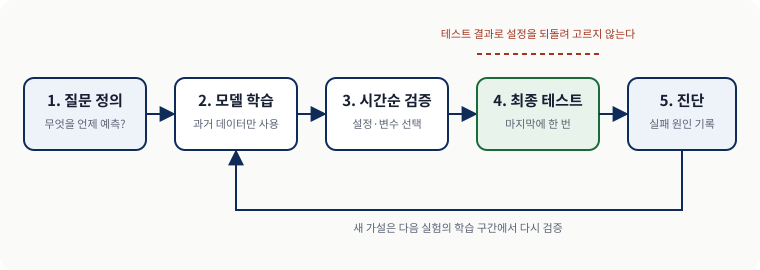
자세한 설명과 수치 근거는 이 그림의 앞뒤 본문에 있다.금융 실무자들이 이런 방법론을 데이터 마이닝(data mining) 이라 부르며 경멸조로 취급하는 데에는 근거가 있다. 틱 데이터를 쓰지 않는 한 금융 데이터는 양이 상당히 제한적이고, 통계적 의미에서 정상성이 부족하다 — 수익률의 확률분포가 영원히 일정하게 유지되지 않는다는 뜻이다. 이런 데이터에 알고리즘을 그냥 풀어놓으면 과거 어느 구간에서는 기막히게 잘 맞았지만 앞으로는 처참하게 실패하는 규칙이 손쉽게 나온다.
사람이 만든 모델도 새 데이터에서 실패할 수 있다. 다만 경제적 가설이 분명하면 어떤 전제가 달라졌는지 진단하기가 비교적 쉽다. 반대로 많은 후보를 자동으로 탐색한 모델은 성과가 나빠졌을 때 원인을 설명하기 어렵다. 그래서 이어지는 절은 복잡한 모델보다 표본 외 성능을 지키는 절차 — 학습·테스트 분리, 시간순 교차 검증, 배깅 — 에 더 많은 비중을 둔다.
그럼에도 AI를 버리지 않는 이유
그렇다고 이 분야를 접어 둘 수는 없다. 발전 속도가 그만큼 빠르다. 실무자들은 과적합 편향(overfitting bias), 곧 과거에만 잘 맞고 미래엔 어긋나는 성향을 피하도록 특별히 설계된 기법을 계속 내놓고 있다. 신경망만 해도 불과 몇 년 전까지는 비실용적이라며 외면받았지만, 2006년의 한 돌파구(Allen, 2015)가 이 분야에 다시 불을 지폈다.
트레이딩에 더 와닿는 일화도 있다. 퀀트 펀드 Renaissance Technologies 의 한 고위 관리자가 가장 수익성 높은 전략 중 하나에 합리적인 금융적 정당성이 전혀 없었다고 언론에 밝힌 적이 있다고 전해진다. 바로 그 "설명 불가능함" 덕분에 그 전략은 다른 트레이더들에게 차익거래로 갉아먹히지 않고 오래 살아남을 수 있었다. AI 기법이 건네줄 수 있는 규칙이 이런 종류라는 것이다.
또 하나의 쓸모는 더 실무적이다. 누군가 기본적 지표든 기술적 지표든 한 뭉치를 건넸는데 그것을 어떻게 써야 할지 감도 직관도 없을 때, 그냥 AI 에게 던져 주는 것이 가장 손쉬운 길이고 그 결과가 도리어 그 지표들에 대한 사람의 이해를 넓혀 줄 수도 있다.
이 장에서 쓰는 도구와 모델의 지형도
이 장이 다루는 기법들은 기본적이고 널리 알려진 것들이라 이미 표준 라이브러리에 포장되어 있다. 바퀴를 다시 발명하거나 전업 AI 연구자가 될 생각이 없는 트레이더도 꺼내 쓸 수 있다는 뜻이다. 이 리포트의 실행 코드는 scikit-learn과 SciPy로 작성했다.
서로 무관해 보이는 모델들은 세 질문으로 구분할 수 있다. 무엇을 출력하는가, 입력과 출력 사이에 어떤 모양의 규칙을 만드는가, 학습할 때 정답 라벨을 볼 수 있는가다. 예를 들어 SVM은 상승·하락 클래스를 출력하지만 커널에 따라 경계의 모양이 달라진다.
 자세한 설명과 수치 근거는 이 그림의 앞뒤 본문에 있다.
자세한 설명과 수치 근거는 이 그림의 앞뒤 본문에 있다.
SVM은 선형 커널을 쓰면 직선 경계를, 비선형 커널을 쓰면 곡선 경계를 만든다. 이 장의 Python 실험에서는 시간순 교차 검증으로 다항식 커널이 선택되었다. HMM은 정답 상태 라벨 없이 관측 시계열의 구조를 학습한다.
| 기준 | 구분 | 해당 모델 | 실무에서 갈리는 지점 |
|---|---|---|---|
| 출력 | 수치 / 클래스 / 확률 | 회귀·신경망 / 분류 트리·SVM / HMM | 기대수익률의 크기를 쓸지, 부호나 상태 확률만 쓸지 정한다. |
| 규칙의 모양 | 선형 / 구간별 / 비선형 / 상태 전이 | 단계적 회귀 / 트리 / 다항식 SVM·신경망 / HMM | 유연할수록 잡음까지 학습할 여지가 커져 검증이 더 중요하다. |
| 정답 라벨 | 관측 가능 / 은닉 | HMM을 제외한 모델 / HMM | 은닉 상태에는 정답표가 없으므로 확률 모형과 EM으로 함께 추정한다. |
이 모든 모델은 몇 가지 공통 기법으로 개선할 수 있다. 다섯 가지 가운데 앞의 넷은 학습셋 과적합을 줄이는 것이 목표이고, 다섯 번째인 부스팅만 결이 다르다.
| 기법 | 학습 과정에서 무엇을 바꾸는가 | 여러 모델을 어떻게 쓰는가 | 목표 |
|---|---|---|---|
| 교차 검증(cross validation) | 학습셋을 K개 부분집합으로 분할 | 표본 외 성능이 가장 좋은 하나만 고른다 | 과적합 감소 |
| 배깅(bagging) | 원 학습셋을 복원추출로 재표본추출 | 각 모델의 예측을 평균한다 | 과적합 감소 |
| 무작위 부분공간(random subspace) | 데이터가 아니라 예측 변수(predictor) 를 표본추출 | 각 모델의 예측을 평균한다 | 과적합 감소 |
| 랜덤 포레스트(random forest) | 데이터와 예측변수를 함께 | 각 모델의 예측을 평균한다 | 과적합 감소 · 트리 전용 |
| 부스팅(boosting) | 다음 모델의 목표를 앞 모델의 잔차로 바꾼다 | 순차적으로 이어 붙인다 | 예측력 강화 (결이 다르다) |
하나의 예제로 모든 기법을 겨루게 하다
이 장은 단 하나의 단순한 예제에 집중한다. ETF SPY 의 다음 날 수익률을 다양한 룩백(1일·2일·5일·20일)의 과거 수익률로 예측하는 문제다. 매번 새 데이터셋을 이해하느라 힘 빼지 않고도 서로 다른 모델과 기법의 효과와 미묘한 차이를 나란히 견줄 수 있기 때문이다.
다만 SPY 가 AI 기법에 가장 유리한 상품이라는 뜻은 아니다. 실제로 이 기법들 대부분은 예측 변수가 많을수록 더 잘 작동하는데, 서로 상관이 낮은 기술적 변수보다 기본적 변수를 더 쉽게 많이 구할 수 있다. 그래서 장 끝에는 수익률 예측에 유용한 기본적 주식 요인(fundamental factor) 을 골라내는 예제 하나가 덧붙는다.
이 리포트는 알고리즘의 수학적 세부에 오래 머물지 않는다. 알고 싶은 것은 각 기법이 표본 외에서 어떻게 행동하는가다. AI 기반 전략이 블랙박스(black-box) 라는 평판을 얻은 데는 이유가 있다. 모든 학습 알고리즘의 수학적 정당성을 완벽히 이해한들, 그 알고리즘이 어떤 특정 순간에 왜 그 신호를 냈는지를 직관적으로 이해하는 데는 한 발짝도 더 가까워지지 않기 때문이다(주석 1).
단계적 회귀 (Stepwise Regression) — 알고리즘이 스스로 변수를 고르게 하다
- 단계적 회귀(stepwise regression) 는 선형 회귀에 변수 선택 절차를 붙인 방법이다.
- 현재 모형에 변수를 하나씩 넣거나 빼 보면서 적합도가 실제로 개선되는지를 반복해서 검사한다.
- 이 SPY 예제에서는
ret2하나만 남았고, 모든 변수를 쓴 회귀보다 표본 외 성과가 높았다. 이는 이 표본에서 얻은 결과이지ret2의 보편적 중요성을 뜻하지 않는다.
SPY 의 미래 1일 수익률을 예측한다고 하자. 후보 예측변수로 직전 1일 수익률, 스토캐스틱 오실레이터, P/E 비율 같은 것을 떠올릴 수 있다. 어느 것이 중요한지 대개 모르니 부엌 싱크대만 빼고 다 던져 넣는 심정으로 알고리즘에 몽땅 넣고 최선을 기대한다. 이때 알고리즘이 그중 쓸 만한 것을 골라내는 일이 특성 선택이다.
먼저 평범한 다중 회귀부터 — 벤치마크 만들기
기술적·기본적 예측변수를 섞는 대신 다양한 룩백(1일·2일·5일·20일)의 과거 수익률만 예측변수로 쓴다. 평범한 다중 회귀(multiple regression) 는 미래 1일 수익률을 이 모든 예측변수에 동시에 적합시켜 모든 회귀계수와 y절편을 한꺼번에 구한다.
Python · 회귀계수와 p값 계산하기
계수만 필요하면 np.linalg.lstsq 한 줄로 끝난다. 계수와 함께 p값 표 까지 얻으려면 표준오차·t통계량·p값을 직접 계산해야 한다.
design = np.column_stack([np.ones(len(x)), x])
coefficients, *_ = np.linalg.lstsq(design, y, rcond=None)
# 계수와 함께 p값 표까지 얻으려면 아래가 더 필요하다
covariance = variance * np.linalg.inv(design.T @ design)
t_statistics = coefficients / np.sqrt(np.diag(covariance))
p_values = 2.0 * stats.t.sf(np.abs(t_statistics), degrees_of_freedom)예측변수는 룩백별 과거 수익률 네 개 ret1·ret2·ret5·ret20 이고, 목표는 미래 1일 수익률 retFut1 이다. 위 코드의 np.ones 열이 상수항 자리다.
이 회귀 모델을 적합하는 데 전체 데이터를 다 써서는 안 된다. 데이터의 후반부는 테스트셋(test set) 으로 남겨 둔다. 여기서 trainset 은 데이터 전반부의 인덱스를 담은 배열이다. 학습셋(training set) 과 테스트셋을 나누는 것은 어떤 거래 모델을 만들 때든 늘 지키는 절차이지만, 머신러닝 모델은 과적합 성향이 유독 강하기 때문에 특히 중요하다.
Python · 오늘의 신호로 다음 거래일 포지션 만들기
오늘 종가까지 계산한 예측은 다음 거래일부터 사용할 수 있다. 따라서 신호를 한 칸 뒤로 옮긴 뒤 그날의 수익률과 곱하고, 포지션이 바뀐 만큼 거래비용을 뺀다.
signals = np.sign(prediction) # +1: $1 매수, -1: $1 공매도
positions = np.r_[0.0, signals[:-1]] # 오늘의 신호로 내일 포지션 진입
one_day_returns = positions * returns # 하루 수익을 받은 뒤 포지션 종료
turnover = np.abs(np.diff(np.r_[0.0, positions]))
net_returns = one_day_returns - turnover * 2 / 10_000 # 편도 2bps이 장이 쓰는 전략은 하나다 — 예측이 양수면 SPY 를 1달러어치 매수하고 음수면 1달러어치 공매도한 뒤 딱 하루만 보유한다. 이 장의 모든 백테스트가 이 규칙 위에 서 있다.
학습 구간(2004년 12월 22일~2009년 9월 15일)에서는 연평균 성장률(CAGR, compound annual growth rate) 34.3퍼센트, 샤프 비율(Sharpe ratio) 1.4 가 나온다. 그러나 이 모형을 다시 학습하지 않고 테스트 구간(2009년 9월 16일~2014년 6월 2일)에 적용하면 CAGR 은 0.4퍼센트, 샤프 비율은 0.1 에 그친다. 모든 예측변수를 쓴 다중 회귀가 학습 데이터에는 잘 맞았지만 새로운 데이터에서는 거의 성과를 내지 못한 것이다.
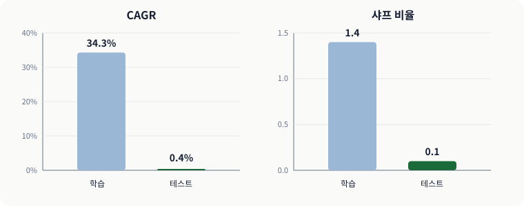
자세한 설명과 수치 근거는 이 그림의 앞뒤 본문에 있다.이 결과가 다음 단계의 기준선이다. 단계적 회귀가 같은 학습 데이터에서 예측변수를 줄인 뒤, 테스트 구간의 CAGR 0.4퍼센트와 샤프 비율 0.1 을 넘어서는지 비교한다.
단계적 회귀는 무엇이 다른가
단계적 회귀는 선형 회귀의 계수를 구하는 동시에 어떤 예측변수를 모형에 포함할지도 정한다. 모든 변수 조합을 한꺼번에 비교하지 않고, 현재 모형에서 변수 하나를 추가하거나 제거한 이웃 모형만 차례로 비교한다. 그래서 이름에 “단계적”이라는 말이 붙는다.
이 예제의 변수 선택 절차는 상수항만 있는 모형에서 시작한다. 남은 변수를 하나씩 넣어 보고, 제곱오차합이 얼마나 줄었는지를 F검정으로 비교한다. 가장 크게 개선한 변수의 p값이 0.05보다 작으면 그 변수를 추가한다. 추가한 뒤에는 남은 변수의 추가 기여를 다시 검사하고, 이미 들어간 변수도 p값이 0.10보다 커졌다면 제거한다. 어느 변수도 더 넣거나 뺄 수 없을 때 멈춘다. AIC나 BIC도 선택 기준으로 쓸 수 있지만, 이 예제는 제곱오차합과 F검정을 사용한다.
이 절차는 학습셋 안에서만 이루어진다. 테스트셋을 변수 선택에 사용하면 표본 외 검증이 아니게 된다. 또한 단계적 회귀는 매 단계에서 가장 좋아 보이는 선택을 하는 탐욕적 탐색이므로, 가능한 모든 변수 조합 가운데 전역 최적 모형을 보장하지 않으며 선택된 변수가 언제나 중요하다는 뜻도 아니다.
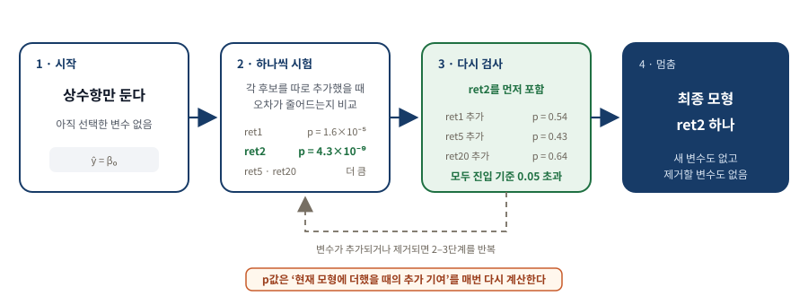
자세한 설명과 수치 근거는 이 그림의 앞뒤 본문에 있다.첫 검사에서는 ret2의 p값이 4.3×10−9로 가장 작아 먼저 추가된다. 중요한 것은 그다음이다. ret2를 포함한 상태에서 다시 계산하면 ret1·ret5·ret20의 추가 기여에 대한 p값은 각각 0.54·0.43·0.64로, 진입 기준 0.05를 넘는다. 이 변수들은 단독으로는 유의해 보일 수 있지만, 서로 겹치는 기간의 수익률이어서 ret2가 이미 설명한 정보에 새로 보탤 부분이 작다. 따라서 최종 모형에는 ret2 하나만 남는다.
Python · 이 예제의 첫 추가 단계를 펼쳐 쓴다
아래 발췌는 첫 단계에서 네 후보를 각각 상수항 모형에 추가해 보는 부분이다. 일반적인 단계적 회귀는 여기서 끝나지 않고, ret2를 추가한 뒤 그림 3의 추가·제거 검사를 반복한다.
# 네 후보를 각각 단변량으로 적합해 p값이 가장 작은 하나를 고른다
for feature_index, feature_name in enumerate(FEATURE_NAMES):
_, p_values = ols_fit(x[:, [feature_index]], y)
candidate_p_values[feature_name] = float(p_values[-1])
selected = min(candidate_p_values, key=candidate_p_values.get)후보 모형은 원래 네 변수에 각각 계수를 곱해 더하는 형태까지만 허용한다. 예를 들면 $\hat{y}=\beta_0+\beta_1\,ret1+\beta_2\,ret2$ 같은 모형이다. ret1 × ret2처럼 두 변수를 곱한 항이나 ret1²처럼 한 변수를 제곱한 항은 후보에 넣지 않는다.
단 하나의 변수가 만든 반전
이 예제에서 선택된 변수는 직전 2일 수익률인 ret2 하나다. 네 변수를 모두 쓴 모델과 비교하면 학습 구간 CAGR은 34.3%에서 43.6%로, 테스트 구간 CAGR은 0.4%에서 10.6%로 높아졌다. 표본 외 성과가 개선되었다는 점은 주목할 만하지만, 샤프 비율 0.7만으로 통계적 유의성을 단정할 수는 없다. 이 결과는 단순한 후보를 먼저 검증할 이유를 보여 주는 한 사례로 읽어야 한다.
| 모델 | 쓴 예측변수 | 표본 내 CAGR · 샤프 | 표본 외 CAGR · 샤프 |
|---|---|---|---|
다중 회귀 np.linalg.lstsq | ret1 · ret2 · ret5 · ret20 (4개) | 34.3% · 1.4 | 0.4% · 0.1 |
단계적 회귀 select_stepwise_predictor | ret2 (1개) | 43.6% · 1.6 | 10.6% · 0.7 |
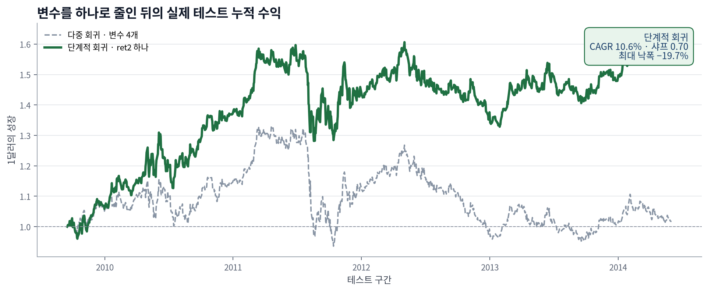
자세한 설명과 수치 근거는 이 그림의 앞뒤 본문에 있다.실제 누적 수익 곡선은 전체 기간의 평균 성과뿐 아니라 수익이 어느 구간에 집중되었는지도 보여 준다. 특정 구간의 상승만으로 전체 CAGR이 만들어졌다면 다른 시기에도 같은 규칙이 유지되는지 별도로 확인해야 한다.
ret2의 회귀계수는 음수다. 따라서 지난 이틀간 SPY가 올랐다면 모형은 다음 날 수익률을 더 낮게 예측하고, 지난 이틀간 내렸다면 다음 날 수익률을 더 높게 예측한다. 즉 이 결과는 최근 이틀의 움직임이 다음 날 일부 되돌아온다는 단기 평균회귀 가설로 해석할 수 있다. 다만 이는 이 학습 구간에서 발견한 패턴이며, 다른 기간에도 항상 성립하는 시장 법칙이라는 뜻은 아니다.
모델은 수익률의 크기까지 예측하지만 여기서는 부호만 신호로 썼다. 크기를 활용하는 길은 두 가지다 — 크기가 어떤 임계값을 넘을 때만 사고파는 것(연습문제 4.2), 예측 크기에 비례하는 금액만큼 사고파는 것(연습문제 4.3)이다.
회귀 트리 (Regression Tree) — 데이터를 스무고개처럼 쪼개다
- 단계적 회귀는 고른 변수를 모든 데이터에 똑같이 적용하지만, 회귀 트리는 데이터를 나눈 뒤 구역마다 다른 규칙 을 세운다.
- 이 유연함이 국면마다 다른 비선형 현상을 담아내지만, 잘게 쪼갤수록 각 잎의 관측치가 줄어 과적합에 빠지기 쉽다.
- 양 극단 잎 두 개만 쓰면 표본 외 3.9%·샤프 0.5, 모든 잎을 쓰면 표본 내 73%·표본 외 −7.2% — 과적합의 전형적 증상이다.
회귀 트리(regression tree) 와 그 형제 격인 분류 트리(classification tree) 도 중요한 예측변수를 골라내는 방법이지만 단계적 회귀와는 결정적으로 다르다. 회귀 트리는 계층적(hierarchical) 으로 접근하며, 사실 이 알고리즘은 선형 회귀와 거의 관계가 없다.
작동 방식은 이렇다. 알고리즘이 어떤 기준으로 최선의 예측변수를 고르면, 그 변수에 부등식 조건(예: "직전 2일 수익률 < 1.5%")을 걸어 데이터를 두 덩어리로 나눈다. 원래 데이터가 부모 노드(parent node), 갈라진 두 덩어리가 각각 자식 노드(child node) 다. 그다음 중지 조건이 충족될 때까지 각 자식 노드에 똑같은 일을 반복한다. 스무고개에서 예/아니오 질문으로 후보를 좁혀 가는 것과 같다.
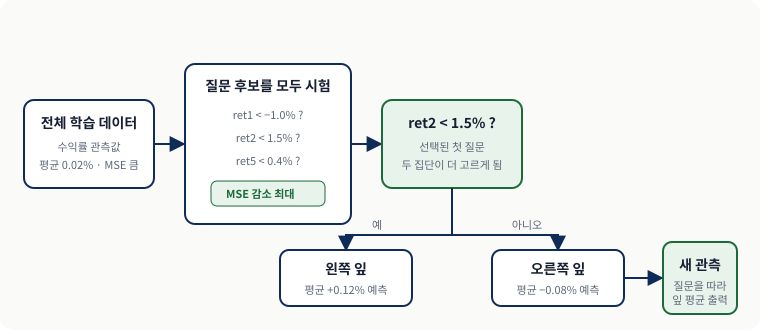
자세한 설명과 수치 근거는 이 그림의 앞뒤 본문에 있다.단계적 회귀와의 근본적 차이를 여기서 잡아 두면 좋다. 단계적 회귀에서는 "ret2 의 계수는 어디서나 −0.3" 하는 식으로 하나의 규칙이 전체를 지배한다. 반면 회귀 트리는 어떤 구역에서는 ret1 이 중요하고 다른 구역에서는 ret2 가 중요할 수 있다. 이 유연함 덕분에 시장이 국면마다 다르게 움직이는 비선형 현상을 담아낼 수 있지만, 동시에 데이터를 잘게 쪼갤수록 각 잎에 남는 관측치가 적어져 과적합에 빠지기도 쉽다.
각 노드에서 최선의 예측변수를 고르는 기준은 보통 자식 노드 안에서 반응변수의 분산(variance) 을 최소화하는 것이다(Breiman et al., 1984). 한 노드의 분산을 최소화한다는 말은 실제 반응과 비교한 예측 반응의 평균제곱오차(MSE, mean squared error) 를 최소화한다는 말과 같다. 한 노드의 예측 반응이란 다름 아닌 그 노드에 든 반응변수들의 평균이기 때문이다. 중지 조건은 다음 중 하나라도 벌어지면 충족된다.
- 부모 노드의 분산과 비교해 분산이 더 줄지 않거나,
- 부모 노드의 관측치가
min_samples_split보다 적거나, - 나눈 뒤 어느 한 자식 노드의 관측치가
min_samples_leaf보다 적어지거나, max_depth또는max_leaf_nodes로 정한 크기 한도에 도달한 경우다.
이 알고리즘은 반복적이라 같은 예측변수가 여러 자식 노드에서 몇 번이고 다시 쓰일 수 있다. 트리의 각 잎(leaf) — 자식이 없는 자식 노드 — 은 예측변수들에 대한 부등식의 집합으로 요약된다. 따라서 우리가 원하는 평균 반응을 가진 잎들을 골라내면 된다. 테스트셋의 어떤 새 데이터가 "높은 미래 수익률 잎"으로 이어지는 부등식을 전부 만족한다면, 그 데이터도 높은 미래 수익률을 낼 것이라 예측한다.
SPY에 회귀 트리 적용하기
단계적 회귀 예제와 똑같은 데이터·예측변수·반응변수에 회귀 트리를 시도한다. 절차는 사실상 단계적 회귀 예제와 같고, ols_fit 자리에 DecisionTreeRegressor를 넣어 회귀식을 트리로 바꾼다.
 자세한 설명과 수치 근거는 이 그림의 앞뒤 본문에 있다.
자세한 설명과 수치 근거는 이 그림의 앞뒤 본문에 있다.
질문을 위에서 아래로 따라가면 하나의 잎에 도착한다. ret2가 1.53% 이상이면 기대수익률이 가장 낮은 잎으로 가므로 공매도 신호를 낸다. ret2가 1.53%보다 작고 ret1이 −1.39%보다 작으면 기대수익률이 가장 높은 잎으로 가므로 매수 신호를 낸다. 그 밖의 잎에서는 거래하지 않는다.
Python · 회귀 트리 — DecisionTreeRegressor
min_samples_leaf=100은 잎 하나에 학습 관측치가 최소 100개 남도록 제한한다. random_state를 고정하면 같은 데이터에서 같은 트리가 만들어진다. 학습 배열은 테스트 구간의 수익률이 목표값으로 섞이지 않도록 경계 직전 행까지만 사용한다.
x_train, y_train, _ = valid_training_arrays(data) # 누수 1행 제외
tree = DecisionTreeRegressor(min_samples_leaf=100,
random_state=RANDOM_SEED)
tree_rmse, _ = chronological_cv_regression(tree, x_train, y_train)잎 크기 하한은 100 으로 두었지만 그 값은 예시일 뿐이어서 다른 값을 학습셋에서 시험해 봐도 된다. 다만 잎 크기가 너무 작아지는 쪽은 과적합을 부른다.
리프 노드 아래의 숫자들은 그 잎에 이르는 일련의 부등식 아래에서 반응변수의 기댓값(expected value) 을 나타낸다.
두 규칙 모두 단계적 회귀가 낳은 모델과 마찬가지로 평균회귀적(mean-reverting) 이다. 롱 규칙에 따라 종가에 SPY를 사서 하루 보유하고 숏 규칙에 따라 공매도해 하루 보유하면, 학습셋에서는 CAGR 28.8퍼센트에 샤프 비율 1.5, 테스트셋에서는 CAGR 3.9퍼센트에 샤프 비율 0.51이 나온다. 단계적 회귀만큼 좋지는 않다.
왜 극단의 잎 두 개만 쓰는가 — 과적합의 함정
모든 잎의 예측값을 거래 신호로 사용할 수도 있다. 그러나 트리는 각 노드에서 많은 변수와 기준값을 반복해서 시험한다. 검증 없이 트리를 깊게 만들고 같은 학습 데이터로 성능까지 평가하면, 우연히 잘 맞은 분할을 진짜 규칙으로 오인하기 쉽다. 답을 확인하면서 같은 시험지를 계속 고쳐 푸는 것과 비슷하다. 이 예제에서 모든 잎을 사용한 결과는 학습 구간 CAGR 73%였지만 테스트 구간에서는 −7.2%였다.
| 근거 | 사용 방식 | 신호 생성 | 표본 내 CAGR · 샤프 | 표본 외 CAGR · 샤프 |
|---|---|---|---|---|
| 공식 입력 재계산 | 양 극단 잎 2개 | ret2 < 1.53% 그리고 ret1 < −1.39% 면 매수 / ret2 ≥ 1.53% 면 공매도. 조건 밖의 날은 포지션 없음 | 28.8% · 1.5 | 3.9% · 0.51 |
| 교재 보고값 | 모든 잎 | predict로 매일 기대 반응을 얻어 부호대로 매매 | 73% · — | −7.2% · — |
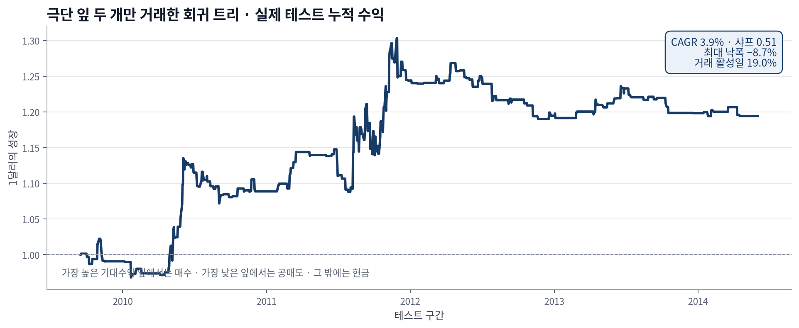
자세한 설명과 수치 근거는 이 그림의 앞뒤 본문에 있다.그림 6은 테스트 구간만 떼어 실제 일별 수익을 누적한 결과다. 전략이 거래한 날은 전체의 19%뿐이므로 CAGR만 볼 것이 아니라 포지션이 비어 있던 날과 최대 낙폭도 함께 봐야 한다. 이어지는 절에서는 트리의 복잡도를 학습 구간 안에서 검증하고 여러 트리의 예측을 평균하는 방법을 살펴본다.
교차 검증 (Cross Validation) — 모델을 만들면서 미리 표본 외로 검증하다
- 시계열 교차 검증은 과거 구간으로 학습하고 바로 뒤 구간에서 검증하는 과정을 여러 번 반복한다.
- 각 검증 구간은 해당 모델의 학습에 사용되지 않았으므로 미래 정보를 과거로 가져오지 않는다.
- 여러 설정의 평균 검증 오차를 비교해 하나를 고른 뒤, 선택한 설정으로 전체 학습 구간을 다시 적합한다.
교차 검증(cross validation)은 테스트셋을 열어 보기 전에 모델 설정을 비교하는 절차다. 금융 시계열에서는 순서를 섞지 않는다. 첫 번째 모델은 가장 이른 과거로 학습하고 그다음 구간에서 검증한다. 두 번째 모델은 학습 구간을 조금 더 늘리고 다시 그다음 구간에서 검증한다. 이렇게 얻은 여러 검증 점수를 평균해 잎 크기나 트리 깊이 같은 설정을 비교한다.
핵심은 검증 구간이 언제나 학습 구간보다 뒤에 있다는 점이다. 검증이 끝나면 가장 낮은 평균 오차를 보인 설정을 선택하고, 그 설정으로 전체 학습 구간을 다시 적합한다. 마지막 테스트셋은 이 선택 과정에 사용하지 않는다.
 자세한 설명과 수치 근거는 이 그림의 앞뒤 본문에 있다.
자세한 설명과 수치 근거는 이 그림의 앞뒤 본문에 있다.
Python · TimeSeriesSplit으로 시간 순서를 지킨다
TimeSeriesSplit은 각 폴드에서 학습 인덱스가 검증 인덱스보다 앞서도록 만든다. 이 순서를 지키면 미래 수익률로 과거 모델을 학습하는 오류를 피할 수 있다.
for train, validation in TimeSeriesSplit(n_splits=5).split(x):
fitted = clone(estimator).fit(x[train], y[train]) # 과거로 학습
prediction = fitted.predict(x[validation]) # 그 뒤만 검증
errors.append(np.sqrt(mean_squared_error(y[validation], prediction)))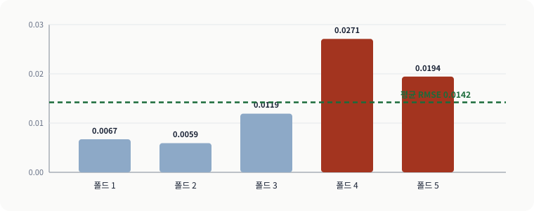
자세한 설명과 수치 근거는 이 그림의 앞뒤 본문에 있다.같은 트리 설정인데도 폴드별 RMSE는 0.0059에서 0.0271까지 달라진다. 평균 RMSE는 0.0142다. 한 구간의 점수만 보고 설정을 고르면 우연에 민감할 수 있으므로 여러 시점의 검증 결과를 함께 봐야 한다.
왜 K = 10이 아니라 K = 5인가
여기서는 학습 관측치가 약 1,157개뿐이어서 다섯 폴드를 사용한다. 폴드를 지나치게 많이 만들면 각 검증 구간이 짧아져 점수가 몇 번의 큰 수익률에 민감해진다. 반대로 폴드가 너무 적으면 서로 다른 시장 구간에서 설정을 확인할 기회가 줄어든다. 다섯 폴드는 검증 구간의 길이와 반복 횟수 사이의 실용적인 절충이다.
배깅 (Bagging) — 데이터를 복제해 여러 모델을 평균 내다
- 학습셋을 나누는 대신 복원추출(sampling with replacement) 로 크기 N 의 복제본을 K개 만든다.
- 교차 검증과 결정적으로 다른 점은 최선 하나를 고르지 않고 모든 트리의 예측을 평균 한다는 것이다.
- Python 실험에서 트리 다섯 개를 평균한 순수 배깅은 테스트 CAGR 10.5%·샤프 0.69를 기록했다.
교차 검증에서 우리는 하나의 학습셋에만 있는 통계적 요동 — 테스트셋에서는 되풀이되지 않을 우연한 잡음 — 에 알고리즘이 과적합하지 않도록 조금씩 다른 학습셋을 제시하는 것이 유익하다는 아이디어를 얻었다. 배깅(bagging) 은 이 주제의 또 다른 변주다.
크기 N 의 원래 학습셋을 부분집합으로 나누는 대신, 배깅은 원래 학습셋에서 N개의 관측치를 복원추출로 뽑아 복제본 하나(백(bag))를 만든다. 복원추출이므로 어떤 관측치는 복제본에 여러 번 들어가고 어떤 관측치는 아예 빠진다. 빠진 것들을 배깅 외 관측치(out-of-bag observations) 라 부른다. 이 과정을 K번 반복해 각각 원래 크기 N 을 갖는 복제본 K개의 앙상블(ensemble) 을 만든다. 사실상 학습 표본을 불려 주므로 부트스트래핑(bootstrapping) 이라고도 부른다.
 자세한 설명과 수치 근거는 이 그림의 앞뒤 본문에 있다.
자세한 설명과 수치 근거는 이 그림의 앞뒤 본문에 있다.
교차 검증과 마찬가지로 각 복제본에서 모델을 학습하고 그에 대응하는 배깅 외 관측치에서 예측 정확도를 검사한다. 그러나 결정적으로 다른 점이 있다. 배깅 외 예측이 가장 정확한 트리 하나만 고르는 것이 아니라, 모든 복제본에서 만든 모든 트리의 예측 반응을 평균 한다. 여러 사람에게 같은 문제를 조금씩 다른 자료로 풀게 한 뒤 그 답들을 평균 내어 개인의 편향을 상쇄하는 것과 같다.
Python · 순수 배깅 — BaggingRegressor
먼저 잎 하나에 최소 100개 관측치가 남는 회귀 트리를 정의한다. BaggingRegressor는 같은 크기의 복원추출 표본을 다섯 번 만들고, 각 표본으로 학습한 트리의 수치 예측을 평균한다.
base_tree = DecisionTreeRegressor(min_samples_leaf=100,
random_state=RANDOM_SEED)
bagging = BaggingRegressor(estimator=base_tree,
n_estimators=5,
bootstrap=True,
random_state=RANDOM_SEED)n_estimators는 트리 수, bootstrap=True는 행을 복원추출한다는 뜻이다. 모든 예측변수를 사용할 수 있게 두었으므로 이 코드는 랜덤 포레스트가 아니라 순수 배깅이다.
Python 노트북에서 순수 배깅의 테스트 구간 총수익 CAGR은 10.5%, 샤프 비율은 0.69다. 편도 2bp의 거래비용을 적용하면 CAGR은 7.1%, 샤프 비율은 0.50으로 낮아진다.
 자세한 설명과 수치 근거는 이 그림의 앞뒤 본문에 있다.
자세한 설명과 수치 근거는 이 그림의 앞뒤 본문에 있다.
그림 9는 자산곡선 대신 배깅의 핵심인 예측 평균을 보여 준다. 실제 Python 성과는 바로 위의 CAGR 10.5%·샤프 0.69이며, 그림 속 A·B·C 값은 평균 과정을 설명하기 위한 예시다.
트리 수를 늘리면 평균 예측은 일반적으로 더 안정되고, 어느 정도 이후에는 개선 폭이 작아진다. 이 예제에서 트리 수가 적은 설정의 성과가 더 좋게 나온다면 작은 앙상블이 우연히 유리했을 가능성도 함께 고려해야 한다. 많은 트리가 서로 다른 실수는 상쇄할 수 있지만, 모든 트리가 공유하는 잘못된 가정까지 없애지는 못한다. 같은 자료를 본 여러 분석가의 의견을 평균해도 모두가 같은 정보를 잘못 해석했다면 결론은 여전히 틀릴 수 있다.
무작위 부분공간과 랜덤 포레스트 — 데이터가 아니라 변수를 뽑다
- 배깅이 데이터 를 표본추출한다면, 무작위 부분공간은 예측변수 를 표본추출한다.
- 랜덤 포레스트는 둘을 버무린 잡종으로, 특히 회귀·분류 트리를 위해 설계되었다.
- Python 실험에서는 순수 배깅이 10.5%, 랜덤 포레스트가 8.7%였다. 변수 후보를 무작위화하는 효과는 데이터마다 달라 검증이 필요하다.
무작위 부분공간(random subspace)은 모델마다 볼 수 있는 예측변수의 일부를 무작위로 고른다. 예를 들어 첫 모델은 ret1과 ret5를, 둘째 모델은 ret2와 ret20을 볼 수 있다. 서로 다른 변수 조합으로 학습한 모델의 예측을 평균하면 특정 변수 하나에 대한 의존을 줄일 수 있다.
scikit-learn에서는 RandomForestRegressor의 max_features가 각 분할에서 시험할 예측변수 수를 정한다. 이 값은 회귀와 분류 모두에 적용할 수 있다. 예측변수가 많을수록 일부만 무작위로 고르는 효과가 커지지만, 네 변수뿐인 SPY 예제에서도 트리 사이의 다양성을 높일 수 있다.
배깅과 무작위 부분공간을 결합한 앙상블이 랜덤 포레스트(random forest) 다. 각 트리는 복원추출한 학습 데이터로 만들고, 노드를 나눌 때마다 예측변수 일부만 무작위로 골라 그 안에서 최선의 분할을 찾는다. 이 노트북은 max_features="sqrt"로 후보 변수 수를 제한한다.
순수 배깅은 행만 복원추출하고 모든 예측변수를 사용한다. 랜덤 포레스트는 행을 복원추출하는 동시에, 트리의 각 노드에서 새 변수 후보 집합을 무작위로 고른다. 모델마다 변수 집합을 한 번만 고르는 무작위 부분공간과 이 점이 다르다.
 자세한 설명과 수치 근거는 이 그림의 앞뒤 본문에 있다.
자세한 설명과 수치 근거는 이 그림의 앞뒤 본문에 있다.
후보 변수를 제한하면 모든 트리가 같은 강한 변수만 반복해서 고르는 현상을 줄일 수 있다. 다만 이것이 항상 더 높은 수익으로 이어지는 것은 아니다. 이 Python 실험에서는 순수 배깅의 총수익 CAGR이 10.5%, 랜덤 포레스트가 8.7%였다. 무작위 변수 선택의 효과도 학습 구간 안에서 검증해야 한다.
| 근거 | 다루는 방식 | 여러 모델을 쓰는 법 | 표본 외 CAGR | 표본 외 샤프 |
|---|---|---|---|---|
| 교재 보고값 | 모든 잎 · 단일 트리 | 없음 | −7.2% | — |
| Python 별도 실험 | 단일 회귀 트리 | 시간순 교차 검증으로 설정을 점검한 뒤 전체 학습 구간에 재적합 | −10.8% | −0.62 |
| Python 별도 실험 | 순수 배깅 · 변수 전체 사용 | 다섯 트리의 수치 예측을 평균 | 10.5% | 0.69 |
| Python 별도 실험 | 랜덤 포레스트 · max_features="sqrt" | 행과 각 노드의 변수 후보를 바꾼 다섯 트리의 예측을 평균 | 8.7% | 0.59 |
| 공식 입력 재계산 | 극단 잎 2개 규칙 | 없음 · 조건 밖에서는 포지션 없음 | 3.9% | 0.51 |
부스팅 (Boosting) — 과거의 실수에 집중해 배우다
- 부스팅은 직전 모델의 예측 오차(잔차) 에 학습 알고리즘을 거듭 적용해 트리를 순차적으로 이어 붙인다.
- 배깅이 독립적인 트리를 나란히 평균해 분산을 낮춘다면, 부스팅은 순차적으로 편향을 줄인다.
- 부스팅이 항상 과적합하는 것은 아니지만, 이 Python 실험에서는 테스트 성과를 개선하지 못했다.
인간은 과거의 실수에서 배우는 능력을 자랑스러워하고, 뛰어난 사람들은 지난 성공을 곱씹느라 시간을 낭비하지 않는다. AI 알고리즘에도 같은 태도를 가르칠 수 있는데 이 방법이 부스팅(boosting) 이다.
첫 단계로 회귀 트리 같은 학습 알고리즘을 학습 데이터에 적용한다. 트리가 세워지고 학습셋에 대한 예측이 나오면 첫 단계가 끝난다. 두 번째 단계는 새로운 학습셋을 만드는 것으로 시작하는데, 이때 반응값은 실제 반응과 첫 모델의 예측 반응 사이의 차이(잔차) 다. 이 두 번째 트리의 목표는 그 차이의 제곱을 최소화하는 것이다. 이 과정을 반복해 총 M개의 트리를 만들고 M번째 트리의 예측을 최종 예측으로 삼는다. 앞 사람이 남긴 오차를 뒷사람이 이어받아 메우는 릴레이인 셈이다.
배깅과 부스팅의 결이 어떻게 다른지 눈여겨볼 필요가 있다. 배깅은 여러 트리를 서로 독립적으로 길러 나란히 평균하여 분산을 낮춘다. 반면 부스팅은 트리들을 순차적으로 이어 붙이되 각 트리가 앞 트리의 잔차에 집중하게 하여 편향을 줄여 간다. 그래서 부스팅은 분산을 낮추는 장치가 아니라 예측력을 짜내는 장치에 가깝고, 바로 그 점 때문에 자칫 학습셋에 지나치게 밀착할 위험도 함께 커진다.
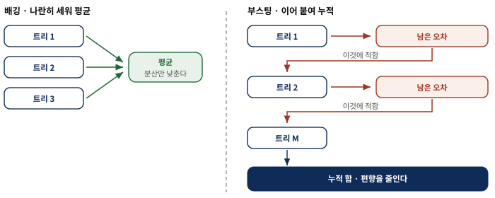
자세한 설명과 수치 근거는 이 그림의 앞뒤 본문에 있다.Python · 부스팅 — GradientBoostingRegressor
반복 횟수 M을 임의로 정하지 않고, 네 후보를 시간순 교차 검증으로 비교해 평균 RMSE가 가장 낮은 값을 고른다.
# M 을 손으로 정하지 않고 시계열 교차 검증으로 고른다
for estimators in (5, 20, 80, 160):
candidate = GradientBoostingRegressor(n_estimators=estimators,
min_samples_leaf=100,
learning_rate=0.05)
scores[estimators] = chronological_cv_regression(candidate, x, y)
selected_boosters = min(scores, key=scores.get) # 오차 최소여기 쓰는 부스팅은 회귀 트리를 경사 하강법(gradient descent method)(Friedman, 1999)으로 이어 붙이는 방식이고, M 은 반복 횟수다.
반복 횟수 M은 학습셋 안의 시계열 교차 검증 오차로만 고르며, 테스트셋은 이 선택에 사용하지 않는다.
부스팅은 항상 과적합하는 알고리즘은 아니며, 반복을 늘려도 일반화 성능이 유지될 수 있다는 이론과 경험적 결과가 있다. 그러나 그것은 보장이 아니다. 이 Python 실험에서는 학습 구간의 시간순 교차 검증이 160회를 골랐지만 테스트 CAGR은 −2.2%, 샤프 비율은 −0.05였다. 따라서 이 데이터에서는 부스팅이 과적합을 줄이는 장치로 작동했다고 볼 수 없다.
 자세한 설명과 수치 근거는 이 그림의 앞뒤 본문에 있다.
자세한 설명과 수치 근거는 이 그림의 앞뒤 본문에 있다.
그림 12는 반복 횟수를 고른 Python 검증 오차와 선택 후 테스트 성과를 한 화면에 놓았다. 왼쪽은 학습·테스트 샤프가 아니라 학습 구간 안의 시간순 교차 검증 RMSE다.
분류 트리 (Classification Tree) — 상승/하락이라는 범주를 예측하다
- 수익률을 양(+)과 음(−)으로 이산화하기만 하면 이산형 반응변수를 위해 설계된 알고리즘도 쓸 수 있다.
- 회귀 트리의 분산이 지니 다양성 지수(GDI) 로 바뀔 뿐 나머지 뼈대는 똑같다.
- Python 실행 결과는 검증 정확도 52.7%, 테스트 총수익 CAGR 4.0%였지만 편도 2bp 비용 후 CAGR은 0.05%로 거의 사라졌다.
지금까지의 학습 알고리즘은 반응변수가 연속형이라고 가정했다. 트레이딩에서는 대체로 기대수익률에 관심이 있으니 자연스러운 일이다. 그러나 이산형(범주형) 반응변수를 위해 특별히 설계된 알고리즘도 있고 이를 마다할 이유는 없다.
분류 트리는 회귀 트리와 아주 가까운 형제다. 회귀 트리에서 노드를 나누는 최선의 변수는 자식 노드에서 반응값의 분산을 최소화하는 변수였다. 분류 트리에서는 이 분산이 그에 대응하는 지니 다양성 지수(Gini's Diversity Index, GDI) 로 바뀐다. 양(+) 또는 음(−) 두 클래스로 나누는 이진 분류에서 한 노드의 GDI 는 다음과 같다.
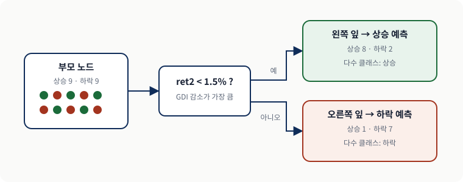
자세한 설명과 수치 근거는 이 그림의 앞뒤 본문에 있다.$$1 - p_{+}^{2} - p_{-}^{2}$$
여기서 $p_{+}$ 는 그 노드에서 양의 수익률을 가진 관측치의 비율, $p_{-}$ 는 음의 수익률을 가진 관측치의 비율이다. GDI 의 최솟값은 0 이며 이는 노드가 오직 한 클래스의 관측치로만 이루어질 때, 즉 완벽하게 분류될 때 얻어진다. 반대로 양·음이 정확히 반반이면 GDI 는 최대인 0.5 가 된다. GDI 를 순도의 반대, 곧 불순도라고 생각하면 편하다.
 자세한 설명과 수치 근거는 이 그림의 앞뒤 본문에 있다.
자세한 설명과 수치 근거는 이 그림의 앞뒤 본문에 있다.
Python · 분류 트리 — DecisionTreeClassifier
회귀에서 분류로 넘어갈 때 바뀌는 것은 세 군데뿐이다. 추정기가 Regressor 에서 Classifier 로, 반응이 실수에서 참·거짓으로, 평가 척도가 오차에서 정확도로 바뀐다. 나머지 인자는 그대로다.
labels = y_train >= 0 # 반응을 상승/하락으로 이산화
tree = DecisionTreeClassifier(min_samples_leaf=100,
random_state=RANDOM_SEED)
accuracy, _ = chronological_cv_classification(tree, x_train, labels)트리는 각 노드에서 많은 변수와 기준값을 시험하므로, 같은 학습 데이터에서 깊이와 성능을 모두 판단하면 우연히 잘 맞은 분할을 선택하기 쉽다. 이를 줄이기 위해 시간순 교차 검증으로 잎 크기 같은 설정을 확인하고, 테스트셋은 마지막 평가에만 사용한다.
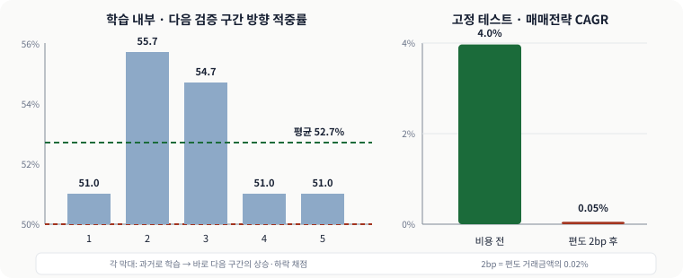
자세한 설명과 수치 근거는 이 그림의 앞뒤 본문에 있다.예측이 상승이면 매수하고 하락이면 공매도한다. Python 실행 결과의 평균 검증 정확도는 52.7%였다. 테스트 구간의 총수익 CAGR은 4.0%, 샤프 비율은 0.32지만 편도 2bp 비용을 적용하면 CAGR은 0.05%로 거의 사라진다. 정확도가 50%를 조금 넘는 것만으로는 거래 가능한 전략이라고 결론 내릴 수 없는 이유다.
반응을 꼭 양/음 수익률로만 나눌 필요는 없다. 높은 양의 수익률을 한 클래스로, 그 여집합을 다른 클래스로 만든 뒤 이 고수익 클래스가 예측될 때만 매수 신호를 낼 수도 있다. 마찬가지로 낮은 음의 수익률을 한 클래스로 만들어 그 클래스가 예측될 때 공매도 신호를 낼 수도 있다. 다만 이렇게 해도 전략 성과가 나아지지는 않는 것으로 보고된다.
서포트 벡터 머신 (Support Vector Machine) — 가장 넓은 간격으로 두 무리를 가르다
- m차원 공간에서 플러스와 마이너스를 갈라 주는 초평면(hyperplane) 을 찾되, 가능한 한 가장 넓은 마진(margin) 으로 가른다.
- 넓은 마진과 오분류 벌점은 경계의 복잡도를 조절한다. 다만 커널과 벌점 설정에 따라 과적합할 수 있으므로 검증은 여전히 필요하다.
- Python 실험은 학습 구간의 시간순 교차 검증으로 다항식 커널을 선택했고, 테스트 CAGR 11.2%·샤프 0.73을 기록했다.
각 표본 데이터가 m차원 공간의 한 점으로 놓여 있다고 상상해 보자. m 은 예측변수의 수이고 예측변수 자체는 여전히 연속 변수다. 이 점들 중 일부에는 플러스, 나머지에는 마이너스 라벨이 붙어 있고 이것이 우리의 이산 반응이다. SVM 은 이 공간에서 두 무리를 갈라 주는 초평면을 찾되 가능한 한 가장 넓은 여백으로 갈라 놓으려 한다.
이것이 가능하다면 분류 과제는 끝난 것이다. 어떤 데이터가 이 초평면의 어느 쪽에 있는지만 보면 그 반응 범주를 정확히 알 수 있기 때문이다. 분리 초평면에 가장 가까이 붙은 플러스들이 한 무리의 서포트 벡터(support vector) 를 이루고 가장 가까이 붙은 마이너스들도 마찬가지다. 이 두 무리 사이의 간격이 바로 SVM 으로 최대화한 마진이며, 경계를 떠받치는(support) 벡터라는 이름이 여기서 나온다.
 자세한 설명과 수치 근거는 이 그림의 앞뒤 본문에 있다.
자세한 설명과 수치 근거는 이 그림의 앞뒤 본문에 있다.
가운데 실선이 분류 경계이고 양옆 점선 사이가 마진이다. 경계에 가장 가까운 점인 서포트 벡터가 마진의 폭과 경계의 위치를 결정한다. 마진이 넓으면 새 점이 조금 움직여도 분류가 바뀌지 않을 여유가 커지지만, 이것만으로 표본 외 성과가 보장되지는 않는다.
물론 실제 데이터가 이렇게 순순히 갈라지는 경우는 드물다. 최선의 초평면을 써도 오른쪽에 플러스가, 왼쪽에 마이너스가 섞여 있기 마련이다. 그래서 분리 마진을 최대화하는 동시에 오분류된 점에 벌점을 매기는 벌점 항을 최소화함으로써 최선의 초평면을 찾는다(수학적 세부는 Anonymous, 2015).
Python · SVM — SVC, 다만 표준화가 먼저다
SVM 은 두 무리 사이의 간격을 재는 모델이라 변수마다 크기가 다르면 간격 자체가 왜곡된다. 그래서 SVC 를 단독으로 쓰지 않고 StandardScaler 와 묶어 파이프라인으로 만든다. 이렇게 해야 교차 검증의 각 폴드에서 학습 조각의 평균·표준편차만으로 표준화가 이루어지고 검증 조각의 정보가 새지 않는다.
candidates = {
"linear": make_pipeline(StandardScaler(), SVC(kernel="linear")),
"polynomial": make_pipeline(StandardScaler(), SVC(kernel="poly", degree=3)),
"rbf": make_pipeline(StandardScaler(), SVC(kernel="rbf")),
}
scores = {name: chronological_cv_classification(model, x_train, labels)[0]
for name, model in candidates.items()}
selected_kernel = max(scores, key=scores.get)세 커널을 학습 구간의 다섯 폴드에서 비교한 결과 평균 정확도는 선형 53.2%, 다항식 54.2%, RBF 53.5%였다. 가장 높은 다항식 커널을 전체 학습 구간에 다시 적합한 뒤 테스트셋에 한 번 적용한다.
| 기법 | 모델의 모양 | 분할·최적화 기준 | 표본 외 CAGR · 샤프 |
|---|---|---|---|
분류 트리 DecisionTreeClassifier | 축에 평행한 질문이 이어진 구간별 경계 | 두 자식 노드의 GDI 합 최소화 | 4.0% · 0.32 |
서포트 벡터 머신 SVC | 선택된 다항식 커널의 비선형 경계 | 마진 최대화 + 오분류 벌점 최소화 | 11.2% · 0.73 테스트일 99.7% 매수 · SPY 매수·보유 13.4% · 0.85 |
커널 — 곡면으로 데이터를 가르기
직선 하나로 두 클래스를 나누기 어렵다면 커널(kernel)을 사용해 비선형 경계를 만들 수 있다. 이 Python 실험은 선형·3차 다항식·RBF 커널을 같은 시간순 교차 검증으로 비교한다. 커널 종류와 C, gamma 같은 설정을 많이 시험할수록 선택편향이 커지므로 후보 집합을 먼저 정하고 테스트셋은 선택에 사용하지 않아야 한다.
예측변수에 비선형 커널을 적용하는 것은 평평한 판 대신 굽은 막으로 데이터를 가르는 것과 같다. 커널 변환을 이해하는 또 다른 방식은, 데이터를 더 높은 차원의 공간으로 옮겨 그곳에서는 초평면이 깔끔하게 가를 수 있도록 만드는 것이라는 관점이다. 그 초평면을 원래 공간으로 되돌리면 직선이 아니라 곡선으로 나타난다. 이것은 훨씬 큰 유연성을 주지만 그만큼 과적합의 여지도 커진다.
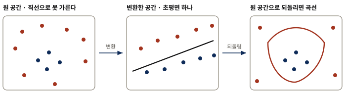
자세한 설명과 수치 근거는 이 그림의 앞뒤 본문에 있다.가운데 공간에서는 직선인 분류 경계가 원래 공간으로 돌아오면 곡선으로 보인다. 그림 15는 이 아이디어를 설명하는 개념도이며 SPY 관측값을 그린 것은 아니다.
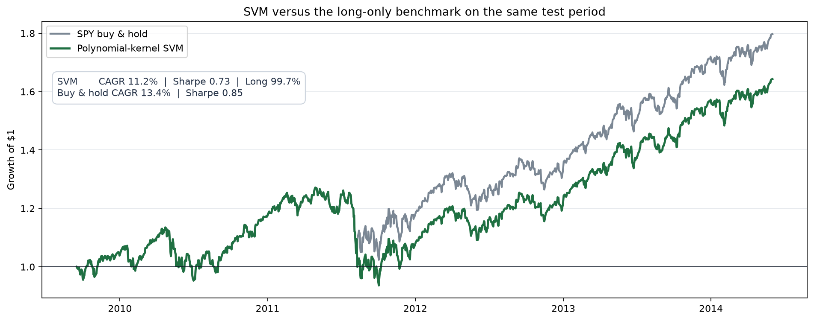
자세한 설명과 수치 근거는 이 그림의 앞뒤 본문에 있다.곡선은 손실 구간을 포함한 실제 일별 백테스트 결과다. 테스트 구간의 총수익 CAGR은 11.2%, 샤프 비율은 0.73, 최대 낙폭은 −26.4%다. 그러나 이 모델은 테스트일의 99.7%에서 매수 포지션을 냈다. 같은 구간의 단순 SPY 매수·보유는 CAGR 13.4%, 샤프 비율 0.85였으므로, 이 결과는 SVM이 시장 방향을 정교하게 맞혔다기보다 대부분의 기간에 시장 노출을 유지한 결과에 가깝다. 비선형 커널이 일반적으로 우월하다는 근거로 읽어서는 안 된다.
은닉 마르코프 모델 (Hidden Markov Model) — 눈에 보이지 않는 시장 국면을 추정하다
- 앞 절들의 "상승일/하락일"은 눈으로 볼 수 있었지만 "강세장/약세장"은 그렇지 않다 — 관측되지 않는 상태를 다루는 비지도 학습 의 영역이다.
- HMM 은 전이 확률 행렬 과 방출 확률 행렬 두 장으로 은닉 상태와 관측값을 잇는다.
- 공개된 전이·방출 확률을 고정해 다시 계산하면 학습 CAGR은 8.7%, 테스트 CAGR은 −1.0%였다.
트레이더들은 어떤 시장 국면을 강세장 또는 약세장이라 부르곤 한다. 그런데 강세장에도 하락일이 있고 약세장에도 상승일이 있으니 무엇이 강세장이고 약세장인지는 사실 명확하지 않다. 평균회귀 시장 대 추세 시장, 위험선호 국면 대 위험회피 국면도 마찬가지다.
머신러닝 연구자들은 이런 모호함에 꽤 익숙하다. 더 정확히 말하면 그들은 클래스 자체가 관측되지 않는 분류 문제에 익숙하다. 앞 절에서 SVM 에게 분류시킨 상승/하락일은 눈으로 볼 수 있었지만 지금은 그렇지 않다. 이렇게 관측할 수 없는(은닉된) 상태를 분류하는 일이 비지도 학습(unsupervised learning) 의 영역이다.
지도 학습과 비지도 학습의 차이를 여기서 분명히 해 둘 필요가 있다. 앞 절들에서는 "상승일/하락일"이라는 정답 라벨을 눈으로 확인할 수 있었고 알고리즘은 그 정답을 보며 배웠다. 그러나 "강세장/약세장"은 누구도 그날의 정답을 딱 잘라 말해 줄 수 없다. 정답표 없이 오직 관측된 상승·하락일의 나열만 보고 그 뒤에 숨은 상태를 스스로 추론해야 한다.
은닉 상태를 다루는 가장 유명한 모델 중 하나가 은닉 마르코프 모델(Hidden Markov Model, HMM) 이다. 강세장과 약세장을 두 개의 은닉 상태로 상상하고, 전이 확률 행렬(transition probability matrix) 이 하루에서 다음 날로 넘어갈 때 한 상태에서 다른 상태로 옮겨갈 확률을 기술한다고 보면 된다. 이 행렬의 $(i, j)$ 성분은 오늘 상태 $i$ 에서 내일 상태 $j$ 로 갈 확률이다.
$$T=\begin{bmatrix}0.60&0.40\\0.75&0.25\end{bmatrix}$$
강세장이 다음 날에도 강세장으로 남을 확률이 0.6 이고 약세장으로 전이할 확률이 0.4 라는 뜻이다. 약세장이 다음 날에도 약세장으로 남을 확률은 0.25, 강세장으로 전이할 확률은 0.75 다. 당연히 각 행의 확률은 합이 1 이어야 한다.
전이 확률 외에도 각 상태가 하락일과 상승일을 각각 방출할 확률을 알아야 한다. 이 하락일·상승일을 방출(emission) 또는 관측값(observable) 이라 부르며, 이 확률은 방출 확률 행렬(emission probability matrix) 로 정리된다. 이 행렬의 $(i, j)$ 성분은 상태 $i$ 가 방출 기호 $j$ 를 낼 확률이다.
$$E=\begin{bmatrix}0.19&0.81\\0.97&0.03\end{bmatrix}$$
하락일을 첫 번째 방출 기호, 상승일을 두 번째 방출 기호로 두면 이 행렬은 강세 상태가 하락일을 낼 확률이 19퍼센트, 상승일을 낼 확률이 81퍼센트임을 말해 준다. 약세 상태가 하락일을 낼 확률은 97퍼센트, 상승일을 낼 확률은 3퍼센트다.
 자세한 설명과 수치 근거는 이 그림의 앞뒤 본문에 있다.
자세한 설명과 수치 근거는 이 그림의 앞뒤 본문에 있다.
각 상태에서 나가는 두 화살표의 확률은 합이 1이다. 화살표의 굵기는 전이확률의 크기를 나타낸다. 강세 상태가 유지될 확률은 0.60이고 약세 상태가 유지될 확률은 0.25이므로, 이 추정 결과에서는 약세 상태의 지속성이 더 낮다.
두 행렬을 함께 읽으면 HMM이 하는 일이 보인다. 우리 눈에는 상승일과 하락일만 보이지만, 그 뒤에 관측되지 않는 상태가 있다고 가정한다. 상태 1에서는 상승 확률이 81%, 상태 2에서는 하락 확률이 97%이므로 설명을 위해 각각 강세와 약세라는 이름을 붙였다. 이 이름은 사람이 사후에 붙인 해석이며 알고리즘이 경제적 의미까지 학습한 것은 아니다.
우리가 세운 유일한 가정은 상승일과 하락일이 관측 불가능한 두 상태에서 생성된다는 것뿐이다. 이 가정은 상승·하락일을 관측할 확률이 하나의 정상 확률분포로는 만족스럽게 설명되지 않아 보인다는 사실을 담아내기 위한 것이다. 다시 말해 HMM 은 3장에서 다룬 것들보다 더 복잡한 시계열 모델일 뿐이며, 추정할 매개변수가 더 많고 데이터 스누핑 편향의 여지도 더 크다.
매개변수 학습 — EM 알고리즘
상승·하락 관측값은 보이지만 그날의 상태는 보이지 않는다. 상태를 안다면 상태가 바뀐 횟수와 각 상태에서 상승한 횟수를 세어 전이·방출 확률을 구할 수 있다. 반대로 전이·방출 확률을 안다면 각 날짜가 어느 상태였을 가능성이 큰지 계산할 수 있다. EM은 이 두 계산을 번갈아 반복한다.
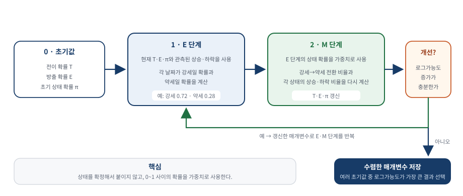
자세한 설명과 수치 근거는 이 그림의 앞뒤 본문에 있다.- 초기화 — 전이행렬 $T$와 방출행렬 $E$의 시작값을 정한다.
- E 단계 — 현재 $T$와 $E$를 사용해 각 날짜가 상태 1·2였을 확률과 상태 전이의 기대 횟수를 계산한다. 확정 라벨 대신 “이날은 강세일 확률 80%” 같은 부드러운 라벨을 만든다.
- M 단계 — E 단계의 확률을 가중치로 사용해 $T$와 $E$를 다시 계산한다.
- 반복 — 관측된 상승·하락 계열의 로그가능도가 거의 개선되지 않을 때까지 E 단계와 M 단계를 반복한다.
EM은 매 반복에서 로그가능도를 낮추지 않지만 전역 최적해를 보장하지는 않는다. 시작값에 따라 다른 국소 최댓값에 도달할 수 있으므로 여러 초기값으로 학습하고, 학습 구간에서 로그가능도가 가장 높은 결과를 선택한다. 테스트셋은 이 선택에 사용하지 않는다.
예측 — 다음 날의 방출 확률 구하기
HMM의 다음 날 예측은 두 단계다. 먼저 오늘의 상태 확률을 전이행렬로 하루 앞으로 이동해 내일의 상태 확률을 구한다. 그다음 내일의 상태 확률과 방출행렬을 결합해 상승·하락 확률을 계산한다.
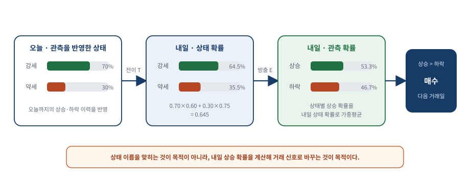
자세한 설명과 수치 근거는 이 그림의 앞뒤 본문에 있다.예를 들어 오늘이 강세일 확률이 70%, 약세일 확률이 30%라고 하자. 행벡터 $p_t=[0.70,\,0.30]$에 전이행렬을 곱하면 내일의 상태 확률이 나온다.
$$p_{t+1}=p_tT=[0.645,\,0.355]$$
내일 강세일 확률은 $0.70\times0.60+0.30\times0.75=0.645$다. 이제 이 상태 확률에 방출행렬을 곱한다.
$$q_{t+1}=p_{t+1}E=[0.467,\,0.533]$$
$q_{t+1}$의 첫 값은 하락 확률, 둘째 값은 상승 확률이다. 상승 확률은 $0.645\times0.81+0.355\times0.03=0.533$, 즉 53.3%다. 상승 확률이 더 높으므로 이 예에서는 매수 신호를 낸다. 전치기호를 오가며 외울 필요 없이, 행은 현재 상태이고 열은 다음 상태 또는 관측값이라는 방향만 일관되게 지키면 된다.
Python · 오늘의 관측으로 상태 확률을 갱신하고 내일을 예측한다
alpha는 오늘까지의 모든 관측을 요약한 상태 확률이다. 은행 잔액이 과거의 모든 입출금을 한 숫자로 요약하듯, 새 관측 하나가 들어오면 직전 alpha만 갱신하면 된다.
observations = (returns >= 0).astype(int) # 0: 하락, 1: 상승
alpha = HMM_PRIOR.copy()
for index, observation in enumerate(observations):
# 오늘 관측으로 오늘의 상태 확률을 갱신한다
if index > 0:
alpha = alpha @ HMM_TRANSITION
alpha = alpha * HMM_EMISSION[:, observation]
alpha = alpha / alpha.sum()
# 상태를 하루 앞으로 이동한 뒤 내일의 하락·상승 확률을 구한다
next_state = alpha @ HMM_TRANSITION
next_observation = next_state @ HMM_EMISSION이 계산에서는 전이·방출 확률을 다시 학습하지 않는다. 학습 구간에서 얻은 행렬을 고정하고, 새 상승·하락 관측이 들어올 때마다 현재 상태 확률과 다음 날 예측만 갱신한다.
전이·방출 행렬을 고정한 순방향 필터링은 새 관측 하나로 상태 확률을 갱신하므로 온라인 추론에 해당한다. 다만 행렬 자체를 새 데이터마다 다시 학습하는 온라인 매개변수 학습과는 다른 작업이다. 칼만 필터 역시 직전 상태 추정치와 새 관측으로 갱신하지만 연속형 은닉 상태를 다룬다는 점이 다르다.
상승 확률이 하락 확률보다 높으면 매수하고 반대면 공매도한 결과, 학습 구간 CAGR은 8.7%였지만 테스트 구간 CAGR은 −1.0%, 샤프 비율은 0.02였다. 공개된 실행 기록과 재계산 값이 일치하며, 교재 본문의 양의 1% 표기와 다른 점은 보충 A에서 설명한다.
다음 날 수익률을 예측하는 HMM 에는 많은 변형이 있다. 바꿀 수 있는 곳이 세 군데다. 첫째, 매개변수를 학습셋에서 한 번 추정하는 대신 새 방출이 관측될 때마다 다시 추정한다(연습문제 4.7). 둘째, 방출을 이산값으로 두는 대신 Gaussian 이나 Student-t 같은 연속 분포로 모델링한다(Dueker, 2006). 셋째, 방출이 은닉 상태에만 의존하게 두는 대신 이 장의 지도 학습 모델들이 쓴 예측변수에도 의존하게 한다.
덤 — 가장 그럴듯한 상태 시퀀스 (Viterbi)
HMM 에는 다음 방출을 예측하는 것 말고도 부수적인 이점이 있다. 관측된 방출이 주어지면 가장 그럴듯한 은닉 상태 시퀀스를 찾을 수 있는데, 이 절차를 비터비 알고리즘(Viterbi algorithm)이라 한다. 이름은 이 디코딩 알고리즘을 고안한 Andrew Viterbi에서 왔다.
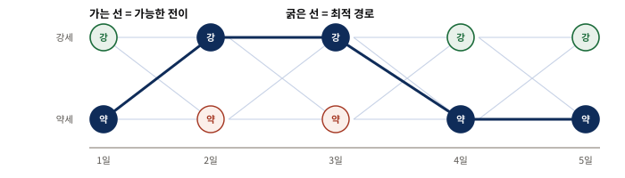
자세한 설명과 수치 근거는 이 그림의 앞뒤 본문에 있다.가는 선은 가능한 모든 전이이고 굵은 선은 전체 관측을 가장 잘 설명하는 하나의 경로다. 비터비 알고리즘은 날짜마다 상태를 따로 고르지 않고 경로 전체의 확률을 비교한다.
Python · 비터비는 계열 전체를 본 뒤 경로를 되짚는다
비터비 알고리즘은 전체 관측을 가장 잘 설명하는 하나의 상태 경로를 되짚어 찾는다. 앞 절의 전방 확률과는 목적이 다르다. 비터비 경로는 계열 전체를 본 뒤에 확정되므로 국면을 사후에 설명하는 데 쓰이고, 전방 확률은 그 시점까지의 정보만 쓰므로 거래 신호로 쓸 수 있다.
# 매 걸음 최선의 직전 상태를 기억해 두었다가 끝에서 되짚는다
delta = np.log(HMM_PRIOR * HMM_EMISSION[:, obs[0]])
back = np.zeros((len(obs), 2), dtype=int)
for t in range(1, len(obs)):
scores = delta[:, None] + np.log(HMM_TRANSITION)
back[t] = scores.argmax(axis=0)
delta = scores.max(axis=0) + np.log(HMM_EMISSION[:, obs[t]])
states = backtrace(back, int(delta.argmax()))가장 그럴듯한 상태 시퀀스를 아는 것이 무슨 이득일까. 실용적인 답은 하나다 — 지금이 강세장인지 약세장인지 물으면 HMM 에 물어보고 명확히 정의된 답을 줄 수 있다(연습문제 4.8). 다만 단서가 붙는다(주석 7). 국면을 알아내는 일이 방송의 질문에 답하는 것 이상의 쓸모가 있어야 한다고 여길 수 있지만, 궁극적으로 우리는 기대수익률에만 관심이 있으며 국면은 이론적 구성물일 뿐이고 국면 전환도 마찬가지라는 것이다.
신경망 (Neural Network) — 비선형 변환을 겹쳐 복잡한 관계를 학습하다신경망 (Neural Network) — 시그모이드를 겹쳐 임의의 함수를 근사하다
- 뉴런은 입력의 가중합에 시그모이드나
tanh같은 비선형 활성함수를 적용한다. - 표현력이 커진 만큼 잡음까지 외워 버리는 과적합 위험도 커진다 — 은닉층과 뉴런이 많아질수록 상황은 나빠진다.
- 재학습과 평균화 두 표에서 모두 일관되게 양수인 것은 은닉층 하나·뉴런 하나인 가장 단순한 구조뿐이다. 다만 성과 자체는 앞선 기법보다 약하다.
신경망은 머신러닝 알고리즘 중 가장 잘 알려진 것일지 모른다. 오랜 역사만큼 수많은 하위 유형·아키텍처·학습 알고리즘으로 갈라져 왔다. 여기서는 SPY 수익률 예측에 알맞은 가장 기본적인 아키텍처만 다룬다.
뉴런 하나는 여러 입력에 가중치를 곱해 하나의 점수로 합친 뒤 비선형 활성함수에 통과시킨다. 여러 층이 이 계산을 반복하면 직선 하나로 표현하기 어려운 관계를 만들 수 있다. 다만 표현력이 커질수록 학습 데이터의 잡음까지 외울 위험도 커진다.
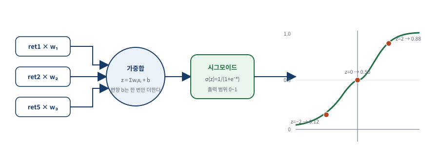
자세한 설명과 수치 근거는 이 그림의 앞뒤 본문에 있다.시그모이드 $\sigma(z)=1/(1+e^{-z})$는 큰 음수를 0에 가깝게, 큰 양수를 1에 가깝게 바꾼다. $z=0$ 부근에서는 작은 입력 변화에도 출력이 민감하게 달라진다. 은닉층의 출력은 단순한 활성값이며 자동으로 상승 확률이 되는 것은 아니다. 이 장의 Python 신경망은 은닉층에 tanh를 사용하고, 음수 수익률도 예측할 수 있도록 마지막 출력층은 선형으로 둔다.
순방향 네트워크의 구조
가장 기본적인 아키텍처는 순방향 네트워크(feed forward network) 다. 여러 개의 은닉층(hidden layer) 을 쌓아 만든다. 각 은닉층은 뉴런(neuron) 여러 개를 담고, 뉴런 하나가 저마다 다른 가중치를 가진 시그모이드 함수 하나다. 마지막 출력층(output layer) 만 선형 함수다. scikit-learn에서는 각 층의 뉴런 수를 hidden_layer_sizes로 지정한다. 예컨대 hidden_layer_sizes=(2, 4, 3)은 첫 번째 층에 뉴런 2개, 두 번째 층에 4개, 세 번째 층에 3개가 있음을 뜻한다.
각 뉴런은 입력 벡터의 성분들을 저마다의 가중치로 가중합한 값 하나를 받는다.
$$I_{j} = \sum_{i=1}^{4}w_{j,i}x_{i} + b_j$$
여기서 $I_j$는 $j$번째 뉴런의 입력 점수, $w_{j,i}$는 학습되는 가중치, $x_i$는 입력값, $b_j$는 편향이다. 편향은 합계 바깥에서 한 번만 더한다.
만약 시그모이드 함수가 그냥 항등 함수 $S(I_{j}) = I_{j}$ 였다면 이 뉴런은 단계적 회귀 절 앞부분에서 다룬 평범한 다중 선형 회귀와 다를 바 없다. 그러나 우리는 비선형 함수가 더 잘 맞으리라 믿고, 그래서 신경망은 시그모이드 형태를 쓴다.
 자세한 설명과 수치 근거는 이 그림의 앞뒤 본문에 있다.
자세한 설명과 수치 근거는 이 그림의 앞뒤 본문에 있다.
그림 19의 구조는 hidden_layer_sizes=(2, 4, 3)에 해당한다. 층과 뉴런을 늘리면 학습되는 가중치 수도 빠르게 늘어난다. 따라서 구조는 테스트셋이 아니라 학습 구간 안의 검증 결과로 정해야 한다.
가장 단순한 네트워크부터 — 그리고 과적합과의 싸움
SPY 예측 문제에서는 여러 층과 뉴런으로 시작하지 않고 hidden_layer_sizes=(1,), 즉 은닉층 하나에 뉴런 하나인 가장 단순한 구조부터 시험한다. 언제나처럼 과적합이 가장 큰 걱정거리이고 은닉층과 뉴런이 많아질수록 상황은 나빠진다. 가중치의 초기값에는 무작위성이 있어, 같은 구조도 초기값에 따라 서로 다른 국소 최솟값에 수렴할 수 있다.
교재의 단일 네트워크·조기 종료 실험에서 은닉층 하나·뉴런 하나는 학습 CAGR 19%, 테스트 CAGR −4%였다. 은닉층을 두 개로 늘리고 각 층에 뉴런 하나를 둬도 개선되지 않았고, 각 층의 뉴런을 두 개로 늘리면 20%·5%가 나왔다. 이 세 값은 아래의 100회 재학습·평균화 표와 다른 기준선이며, 한 번의 초기값에 따른 결과라 그대로 비교하면 안 된다.
Python · 서로 다른 초기값으로 학습한 신경망 열 개의 예측을 평균한다
같은 데이터와 구조를 사용해도 초기 가중치가 달라지면 신경망의 결과가 달라질 수 있다. 아래 모델을 시드 1부터 10까지 학습하고, 매일의 예측 수익률을 먼저 평균한 뒤 그 평균의 부호로 하나의 거래 신호를 만든다.
mlp = make_pipeline(StandardScaler(),
MLPRegressor(hidden_layer_sizes=(8, 4),
activation="tanh", alpha=0.01,
max_iter=500, early_stopping=False,
random_state=seed))
mlp.fit(x_train, (y_train - mean) / scale) # 반응도 표준화하고
prediction = mlp.predict(x_test) * scale + mean # 원래 단위로 되돌린다이 실험은 모든 모델을 500회 이내로 학습하고 내부 조기 종료는 사용하지 않는다. 조기 종료는 학습 횟수를 제한해 과적합을 억제하고, 시드 평균은 초기값에 따른 예측 차이를 줄인다. 두 방법은 서로를 대신하지 않는다.
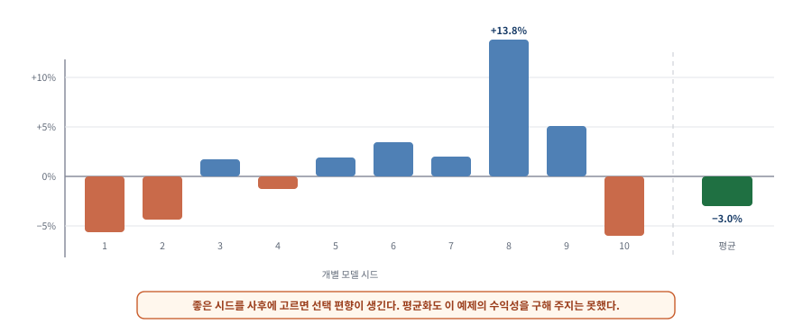
자세한 설명과 수치 근거는 이 그림의 앞뒤 본문에 있다.시드별 테스트 CAGR은 −6.0%에서 +13.8%까지 퍼지고 부호도 달라졌다. 열 모델의 CAGR을 평균한 값이 아니라, 열 모델의 일별 예측을 평균해 다시 백테스트한 앙상블의 CAGR은 −3.0%, 샤프 비율은 −0.11이었다. 한 번의 좋은 초기값을 일반화 성능으로 오인해서는 안 된다.
불안정한 학습 결과를 다루는 두 방법 — 선택과 평균강건성을 높이는 두 가지 길 — 재학습과 평균화
신경망을 여러 번 학습했을 때 결과가 달라진다면 두 가지 방법을 생각할 수 있다. 첫째는 각 모델을 별도의 검증 구간에서 평가하고 가장 낮은 검증 오차를 보인 하나를 선택하는 방법이다. 검증 구간은 학습 구간보다 시간상 뒤에 두고, 테스트셋은 최종 평가 전까지 열어 보지 않는다.
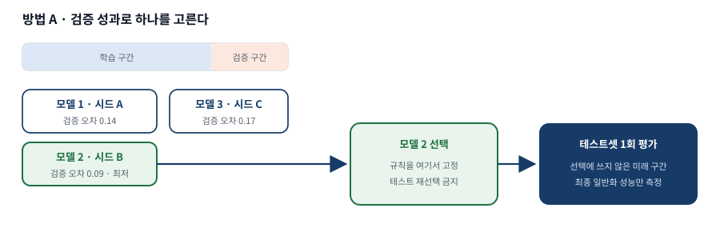
자세한 설명과 수치 근거는 이 그림의 앞뒤 본문에 있다.| CAGR (네트워크 100개) | 은닉층 1개 | 은닉층 2개 | 은닉층 3개 | |||
|---|---|---|---|---|---|---|
| 표본 내 | 표본 외 | 표본 내 | 표본 외 | 표본 내 | 표본 외 | |
| 뉴런 1개 | 29% | 3.2% | 28% | −2.0% | 31% | −3.9% |
| 뉴런 2개 | 40% | −3.3% | 27% | −3.4% | 33% | −5.4% |
| 뉴런 3개 | 28% | −10.0% | 47% | 1.4% | 24% | −12.0% |
은닉층 수나 층당 뉴런 수를 늘리면 표본 내 성능은 종종 좋아지지만 표본 외 결과는 설정에 따라 크게 달라진다. 재학습 표에서는 은닉층 하나·뉴런 하나가 가장 낫고, 두 표 모두에서 같은 구조만 일관되게 양수다. 다만 그 결과조차 앞 절 기법들보다 약하다.
둘째는 최선 하나를 고르지 않고 모든 모델의 일별 예측 수익률을 평균하는 방법이다. 개별 초기값의 우연한 영향은 줄일 수 있지만, 모든 모델이 같은 잘못된 관계를 배웠다면 공통 오류는 남는다.
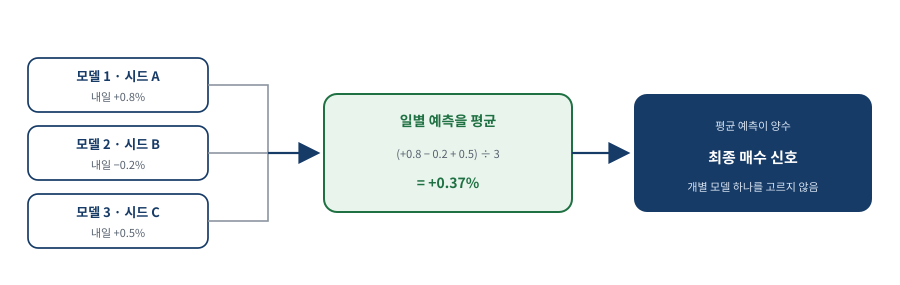
자세한 설명과 수치 근거는 이 그림의 앞뒤 본문에 있다.| CAGR (네트워크 100개) | 은닉층 1개 | 은닉층 2개 | 은닉층 3개 | |||
|---|---|---|---|---|---|---|
| 표본 내 | 표본 외 | 표본 내 | 표본 외 | 표본 내 | 표본 외 | |
| 뉴런 1개 | 26% | 1.9% | 28% | −0.57% | 23% | −2.8% |
| 뉴런 2개 | 52% | −6.2% | 54% | −0.5% | 62% | −2.5% |
| 뉴런 3개 | 43% | −0.62% | 55% | 0.7% | 79% | 5.5% |
첫 방법은 여러 후보 중 하나를 고르므로 검증 구간의 우연에도 과적합할 수 있다. 둘째 방법은 선택의 부담을 줄이지만 공통 편향을 없애지는 못한다. 두 표의 보고값에서도 복잡한 구조의 성과가 주변 설정과 일관되지 않았다. 따라서 이 작은 SPY 데이터에서는 단순한 구조부터 시작하고, 반복 실행의 분포와 앙상블 결과를 함께 확인해야 한다.
두 표를 볼 때 표본 외 열에서 가장 큰 값 하나를 찾는 것은 위험하다. 평균화 표의 은닉층 3개·뉴런 3개 칸은 표본 외 5.5퍼센트로 가장 높지만, 같은 열의 인접 칸들은 음수이고 재학습 표의 같은 자리는 −12.0퍼센트다. 이런 들쭉날쭉함 자체가 그 칸의 값을 신뢰할 수 없다는 신호다. 반면 뉴런 1개·은닉층 1개 칸은 두 표에서 각각 3.2퍼센트와 1.9퍼센트로 일관되게 양수다.
딥러닝과의 인지 부조화
이 결론은 인지 부조화(cognitive dissonance) 를 일으킬 수 있다. 최근 딥러닝(deep learning) 이 놀라운 패턴 인식 능력을 가진 기법으로 대대적으로 선전되어 왔기 때문이다. 딥러닝은 층은 많고 층당 노드는 적은 신경망이다. 딥러닝 연구자들은 이런 구성이 층은 적고 노드는 많은 네트워크보다 학습이 더 쉽고 예측력도 더 낫다고 주장한다.
여기에는 조건이 붙는다 — 그런 관찰은 입력 벡터의 차원이 더 높고(즉 예측변수가 더 많고) 데이터 표본도 더 많은 문제에서만 참일 것이다. 이렇게 특징이 풍부한 데이터셋은 호가창이나 뉴스 같은 비정형 데이터에 접근하지 않는 한 금융에서는 흔치 않다. 다시 말해 이 절의 결론은 "딥러닝이 나쁘다"가 아니라 "예측변수 4개, 행 약 1,000개짜리 문제에서는 깊이가 보상받지 못한다"는 조건부 관찰이다.
데이터 집계 및 정규화 — 500종목의 데이터를 하나로 합치기
- 종목마다 별도 모델을 학습시켜 500개를 만들면 데이터가 늘어난 이점이 없다 — 하나의 벡터로 집계(aggregate) 해 단 하나의 모델만 학습시켜야 한다.
- 집계하려면 먼저 정규화(normalize) 해야 한다. 종목마다 수익률의 변동성이 크게 다르기 때문이다.
- 정규화한 경우 표본 외 CAGR 2.3%·샤프 0.9, 정규화하지 않은 경우 −0.7%·−0.4 — 이 한 단계가 성패를 갈랐다.
머신러닝 알고리즘은 학습 데이터가 많을수록 덕을 본다. 지금까지처럼 단 하나의 상품 수익률만 예측하려 들면 만들어진 모델은 과적합되기 십상이다. 그렇다면 SPY 하나 대신 SPX 지수의 모든 구성 종목 수익률을 예측하면 데이터가 500배 많아지는 셈 아닐까. 어떤 의미에서는 그렇지만 각 종목마다 별도 모델을 순진하게 학습시켜 결국 500개의 모델을 만들면 이야기가 다르다.
왜 정규화가 필요한가
서로 다른 종목의 데이터를 합칠 때 정규화가 필요한 이유는 종목마다 수익률의 변동성이 크게 다르기 때문이다. 예를 들어 "직전 수익률이 100퍼센트를 넘으면 그 종목을 공매도하라"라는 규칙은 합리적이지 않다. 오프라 윈프리가 WTW 에 지분 투자를 결정한 날 WTW 는 하루에 100퍼센트 넘게 뛰었지만, 시가총액 1,880억 달러가 넘는 WMT 는 세상 끝날까지도 그런 날을 보지 못할 수 있기 때문이다.
그러니 어떤 머신러닝 알고리즘에 넣기 전에 종목의 예측변수를 그 종목의 변동성으로 정규화해야 한다. 물론 이미 정규화된 예측변수에는 해당하지 않는다. 상대강도지수(Relative Strength Index) 같은 기술적 지표는 이미 정규화되어 있어 추가 처리가 필요 없다. 예측변수와 마찬가지로 반응변수도 같은 방식으로 정규화해야 한다. 어떤 종목이든 다음 날 수익률이 10퍼센트일 것이라 예측하는 것은 합리적이지 않다.
 자세한 설명과 수치 근거는 이 그림의 앞뒤 본문에 있다.
자세한 설명과 수치 근거는 이 그림의 앞뒤 본문에 있다.
Python · 최근 변동성을 계산하고 수익률의 크기를 표준화한다
먼저 종목별 최근 변동성을 계산한다. 오늘 이후의 수익률이 섞이지 않도록 한 칸 뒤로 옮긴 뒤, 같은 날짜·종목의 예측변수와 목표값을 그 변동성으로 나눈다.
# 행은 날짜, 열은 종목인 수익률 행렬
volatility = (pd.DataFrame(returns)
.rolling(window=20, min_periods=20)
.std()
.shift(1)
.to_numpy())
normalized = features / volatility[:, :, None]
target_normalized = target / volatility
valid = np.isfinite(normalized).all(axis=2) & np.isfinite(target_normalized)변동성 정규화는 시점에 따라 변하는 위험을 반영한다. 변수 전체의 평균과 표준편차로 척도만 맞추는 StandardScaler와는 목적이 다르다.
수익률을 2일 변동성이나 3일 변동성 등으로 나눠도 무방하다. 정확한 정규화 계수는 중요하지 않고, 중요한 것은 정규화된 수익률 변수들이 모두 비슷한 크기를 갖도록 하는 것이다. 2007년 1월 3일부터 2013년 12월 31일까지의 이 데이터는 CRSP 에서 얻었으며 생존편향(survivorship bias) 이 없다(주석 11). 또한 통합 종가와 관련된 문제를 피하려고 가격으로는 장 마감 시점의 중간가격(midprice) 을 쓴다.
reshape — 날짜×종목 표를 종목·일 관측값으로 바꾸기reshape로 행렬을 하나의 벡터로 펴기
각 예측변수는 행이 날짜, 열이 종목인 $T\times S$ 표다. 한 칸은 특정 날짜의 특정 종목에 해당하는 관측값이다. 회귀모형에 넣을 때는 이 표를 긴 목록으로 펼쳐 각 종목·일을 하나의 학습 사례로 만든다.
reshape는 날짜×종목 표의 각 유효한 칸을 하나의 관측값으로 바꾼다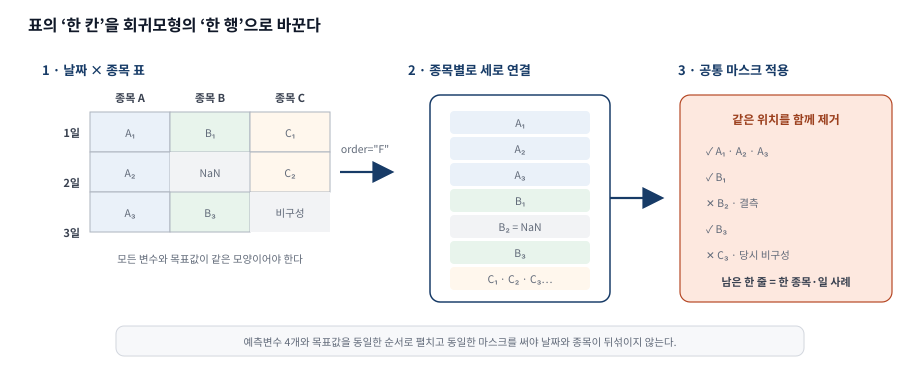
자세한 설명과 수치 근거는 이 그림의 앞뒤 본문에 있다.reshape(-1, order="F")는 첫 번째 종목의 모든 날짜를 먼저 놓고, 이어서 두 번째 종목의 모든 날짜를 놓는다. 예측변수 네 개와 목표값을 모두 같은 순서로 펼쳐야 한 행이 같은 날짜·종목을 가리킨다. 결측값은 모든 배열에 같은 마스크를 적용해 명시적으로 제거한다.
전체 기간에 등장한 종목 수가 500보다 큰 이유는 지수 구성 종목이 계속 바뀌기 때문이다. 현재 구성 종목만 과거에도 존재했던 것처럼 사용하면 생존편향이 생긴다. 각 날짜에는 그날 실제 지수에 포함되어 있던 종목만 사용한다.
 자세한 설명과 수치 근거는 이 그림의 앞뒤 본문에 있다.
자세한 설명과 수치 근거는 이 그림의 앞뒤 본문에 있다.
교재에 보고된 표본 외 CAGR은 2.3%, 샤프 비율은 0.9다. 정규화하지 않은 비교값은 CAGR −0.7%, 샤프 비율 −0.4다. 다만 이 횡단면 입력 데이터는 공개 배포본에 없어 Python 노트북에서 누적 수익 곡선을 다시 계산하지 못했으므로, 그림 21은 실제 재실행 결과가 아니라 교재의 보고값과 성과 집중 구간을 설명하는 도식이다.
주식 선택에의 적용 — 예측력 있는 펀더멘털 요인 찾기
- 2장에서는 모든 요인이 유용하다고 전제하고 다중 회귀에 넣었지만, 여기서는 어떤 요인이 정말 중요한지를 단계적 회귀로 알아낸다.
- 규모 정규화의 복잡함을 피하려고 기업 규모와 무관한 27개 변수만 입력으로 골랐고, 그중 7개가 선택되었다.
- 교재의 보고값은 표본 외 CAGR 4%·샤프 1.1이지만 공개 입력이 없어 Python으로 재실행하지 못했다.
이 장 내내 몇 가지 단순한 수익률 변수만 예측변수로 써 왔다. 그러나 금융에 대한 머신러닝의 더 흥미로운 응용은 예측력 있는 기본적 요인(fundamental factor) 을 발견하는 일일지 모른다. 2장에서 요인 모형을 다룰 때는 모든 요인이 유용하다고 전제하고 다중 회귀의 입력으로 넣었음을 떠올려 보자. 여기서는 어떤 요인이 정말 중요한지를 알아내기 위해 단계적 회귀를 시도할 수 있다.
앞 절의 기술적 변수와 마찬가지로 주당순이익처럼 분명히 정규화가 필요한 펀더멘털 변수가 있다. 다만 이번 정규화는 변동성이 아니라 총매출이나 시가총액을 기준으로 삼아야 서로 다른 종목의 데이터를 합칠 수 있다. 이 복잡함을 피하려고 기업 규모와 무관한 변수만 입력으로 골랐다. 이 펀더멘털 데이터는 Quandl.com 을 통해 제공되는 Sharadar 의 Core US Fundamentals 데이터베이스에서 얻었다.
| 변수명 | 설명 | 기간 |
|---|---|---|
CURRENTRATIO | 유동비율 | 분기별 |
DE | 부채자본비율 | 분기별 |
DILUTIONRATIO | 주식 희석 비율 | 분기별 |
PB | 주가순자산비율 | 분기별 |
TBVPS | 주당 유형자산 장부가치 | 분기별 |
ASSETTURNOVER | 자산회전율 | 최근 1년 |
EBITDAMARGIN | EBITDA 마진 | 최근 1년 |
EPSGROWTH1YR | 주당순이익 성장률 | 최근 1년 |
EQUITYAVG | 평균 자기자본 | 최근 1년 |
EVEBIT | EBIT 대비 기업가치 | 최근 1년 |
EVEBITDA | EBITDA 대비 기업가치 | 최근 1년 |
GROSSMARGIN | 매출총이익률 | 최근 1년 |
INTERESTBURDEN | 재무 레버리지 | 최근 1년 |
LEVERAGERATIO | 레버리지 비율 | 최근 1년 |
NCFOGROWTH1YR | 영업현금흐름 성장률 | 최근 1년 |
NETINCGROWTH1YR | 순이익 성장률 | 최근 1년 |
NETMARGIN | 이익률 | 최근 1년 |
PAYOUTRATIO | 배당성향 | 최근 1년 |
PE | 다모다란 방식 주가수익비율 | 최근 1년 |
PE1 | 주가수익비율 | 최근 1년 |
PS | 주가매출비율 | 최근 1년 |
PS1 | 다모다란 방식 주가매출비율 | 최근 1년 |
REVENUEGROWTH1YR | 매출 성장률 | 최근 1년 |
ROA | 총자산이익률 | 최근 1년 |
ROE | 자기자본이익률 | 최근 1년 |
ROS | 매출액이익률 | 최근 1년 |
TAXEFFICIENCY | 세금 효율성 | 최근 1년 |
이 입력 변수들을 앞 절과 같은 방식으로 집계하고 단계적 회귀 절에서 쓴 함수를 그대로 써서, 알고리즘은 다음 분기 — 더 정확히는 63거래일 — 의 수익률에 대한 유의한 예측변수로 다음 일곱 개를 골랐다. 이 선택은 2007년 1월 3일부터 2013년 12월 31일까지의 데이터에 기반한다(주석 12).
| 변수명 | 기간 |
|---|---|
CURRENTRATIO | 분기별 |
TBVPS | 분기별 |
EBITDAMARGIN | 최근 1년 |
GROSSMARGIN | 최근 1년 |
NCFOGROWTH1YR | 최근 1년 |
PS | 최근 1년 |
ROA | 최근 1년 |
이 예제의 학습 단위는 하루 전체가 아니라 한 기업의 한 번의 실적 발표다. 기업은 매일 실적을 발표하지 않으므로 날짜×종목 표의 대부분 칸은 비어 있다. 이는 데이터 오류가 아니라 그날 새 발표가 없었다는 뜻이다.
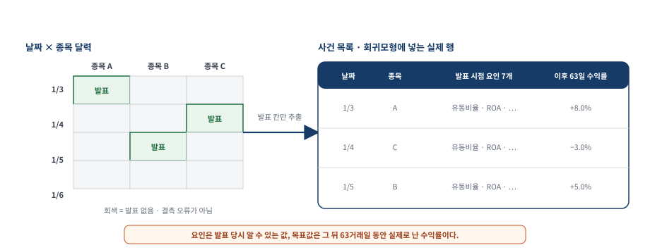
자세한 설명과 수치 근거는 이 그림의 앞뒤 본문에 있다.각 사건 행의 입력은 발표 시점에 알 수 있었던 펀더멘털 요인이고, 목표값은 그 발표 이후 63거래일 수익률이다. Python 회귀모형이 결측값을 자동으로 무시한다고 가정하지 않고, 입력과 목표값이 모두 있는 사건만 명시적으로 선택한다.
예측을 거래 전략으로 — 63일 보유
모델이 출력하는 값은 해당 기업의 실적 발표 이후 63거래일 예상 수익률이다. 예상 수익률이 양수면 매수하고 음수면 공매도한다. 발표 정보가 실제로 이용 가능해진 다음 거래 시점에 진입하고, 63거래일 뒤 포지션을 청산한다.
Python · 유효한 실적 발표 사건만 학습 데이터로 만든다
필요한 펀더멘털 입력은 공개 배포본에 없으므로 아래 코드는 데이터 구조를 설명한다. 각 요인과 63일 이후 수익률을 같은 종목·일 인덱스로 합친 뒤 완전한 사건 행만 남긴다.
event_table = pd.concat(
{name: matrix.stack(dropna=False)
for name, matrix in factor_matrices.items()},
axis=1,
)
event_table["future_return_63d"] = future_return_63d.stack(dropna=False)
required = selected_factors + ["future_return_63d"]
events = event_table.dropna(subset=required)
model.fit(events[selected_factors], events["future_return_63d"])Python · 63일 보유가 겹치는 구간을 다루는 법
실적 발표 날짜가 서로 다르므로 여러 종목의 63일 포지션이 겹친다. 각 신호를 다음 날부터 63일 동안 유지하고, 그날 열려 있는 포지션의 절대 규모로 손익을 나눠 총노출을 일정하게 맞춘다.
# 오늘 신호를 내일부터 63일 동안 겹쳐 쌓는다
signals = np.nan_to_num(np.sign(prediction), nan=0.0)
positions = np.zeros_like(signals)
for h in range(1, holding_days + 1):
positions[h:] += signals[:-h]
# 활성 포지션의 총 절대 규모로 나눈다
gross = np.nansum(positions * returns, axis=1)
exposure = np.nansum(np.abs(positions), axis=1)
daily = np.divide(gross, exposure, out=np.zeros_like(gross), where=exposure > 0) 자세한 설명과 수치 근거는 이 그림의 앞뒤 본문에 있다.
자세한 설명과 수치 근거는 이 그림의 앞뒤 본문에 있다.
그림 22는 포지션 중첩과 정규화 방식을 설명한다. CAGR 4%와 샤프 비율 1.1은 교재에 기록된 값이며, 원자료가 공개되지 않아 실제 누적 수익 곡선은 다시 그리지 않았다. 또한 63일 포지션이 겹치면 일별 전략 수익률에 자기상관이 생겨, 각 날이 독립이라고 가정해 연율화한 샤프가 실제보다 높아질 수 있다. 따라서 1.1을 그대로 통계적 유의성으로 읽거나 데이터 확대의 인과효과로 단정해서는 안 된다.
요약 — 모델보다 검증 설계가 먼저다요약 — 약한 학습기를 다듬는 법이 곧 실력이다
- 어떤 약한 학습기로 시작하느냐 못지않게, 그 학습기를 개선하고 과적합을 줄이는 방법이 중요하다.
- 더 많은 데이터는 서로 다른 정보를 담고 시간 경계가 올바를 때 도움이 된다. 행이나 열의 개수만 늘린다고 일반화가 보장되지는 않는다.
- 새 문제에서는 가장 단순한 기법에서 시작해 점점 복잡한 기법으로 나아간다. 트레이딩에서는 복잡함이 보상받지 못한다.
이 장의 가장 일관된 교훈은 모델의 이름만 바꿔서는 일반화 문제가 해결되지 않는다는 것이다. 시간순 교차 검증은 설정을 테스트셋 밖에서 고르게 하고, 배깅과 랜덤 포레스트는 불안정한 트리의 예측을 평균한다. 신경망의 반복 학습은 초기값 민감도를 드러낸다. 각 방법이 줄이는 오류가 서로 다르므로 목적과 검증 결과를 함께 봐야 한다.
| 근거 | 기법 | 학습·선택 방식 | 테스트 총수익 CAGR · 샤프 |
|---|---|---|---|
| 공식 입력 재계산 | 다중 회귀 · 변수 4개 | 고정 학습·테스트 분할 | 0.4% · 0.10 |
| 공식 입력 재계산 | 단계적 회귀 · ret2 | 학습 구간에서 변수 선택 | 10.6% · 0.70 |
| 공식 입력 재계산 | 회귀 트리 · 극단 잎 규칙 | 두 극단 잎만 거래 | 3.9% · 0.51 |
| 공식 입력 재계산 | HMM | 공개된 행렬을 고정하고 순방향 필터링 | −1.0% · 0.02 |
| Python 별도 실험 | 단일 회귀 트리 | 시간순 교차 검증 진단 | −10.8% · −0.62 |
| Python 별도 실험 | 순수 배깅 · 트리 5개 | 행 복원추출 후 예측 평균 | 10.5% · 0.69 |
| Python 별도 실험 | 랜덤 포레스트 · 트리 5개 | 행과 노드별 변수 후보 무작위화 | 8.7% · 0.59 |
| Python 별도 실험 | 부스팅 | 시간순 검증으로 반복 횟수 선택 | −2.2% · −0.05 |
| Python 별도 실험 | 분류 트리 | 시간순 검증 정확도 평균 52.7% | 4.0% · 0.32 |
| Python 별도 실험 | SVM · 다항식 커널 | 시간순 검증으로 커널 선택 · 테스트일 99.7% 매수 | 11.2% · 0.73 |
| Python 별도 실험 | 신경망 · 시드 10개 평균 | 일별 수익률 예측을 평균 | −3.0% · −0.11 |
| 비교 기준선 | SPY 매수·보유 | 테스트 구간 내내 매수 | 13.4% · 0.85 |
| 교재 보고값 | SPX 기술 변수 · 정규화 | 공개 입력이 없어 재실행하지 못함 | 2.3% · 0.9 |
| 교재 보고값 | SPX 펀더멘털 · 63일 보유 | 공개 입력이 없어 재실행하지 못함 | 4.0% · 1.1 |
 자세한 설명과 수치 근거는 이 그림의 앞뒤 본문에 있다.
자세한 설명과 수치 근거는 이 그림의 앞뒤 본문에 있다.
그림 23에서는 같은 모델의 학습·테스트 막대 사이 간격을 비교한다. 모든 잎을 사용한 트리는 학습 CAGR이 가장 높지만 테스트 CAGR은 음수다. 마지막 신경망 행은 100회 재학습·평균화가 아니라 §4.10.2의 단일 네트워크·조기 종료 기준선이다. 표본 내 성적만으로 모델을 고를 수 없음을 보여 준다.
이 SPY 학습셋은 유효 행 약 1,157개와 예측변수 4개로 작다. 관측값을 늘리는 것은 도움이 될 수 있지만, 같은 정보를 중복한 행이나 미래 정보가 섞인 열을 추가하면 오히려 편향만 커진다. 행과 열의 개수보다 독립적인 정보량, 관측 가능 시점, 결측 제거 후의 실효 표본 수를 확인해야 한다.
금융시장에서 이보다 몇 자릿수 더 많은 데이터를 어디서 찾을 수 있을까. 한 가지 유망한 방향은 고빈도 데이터(high-frequency data) 연구이며(Rechenthin, 2014), 특히 1밀리초 이상의 빈도로 표본추출한 레벨 2 호가다. 또 하나는 뉴스와 소셜 미디어 같은 비정형 데이터(unstructured data) 를 연구해(Kazemian, 2014) 그것이 시장 움직임을 예고하는지 살피는 것이다. Domingos(2012)의 말처럼 머신러닝 알고리즘의 효능은 입력 특성에 크게 의존한다.
보충 A. 공식 코드로 다시 돌려 본 결과
- 저자 공식 배포본을 Python으로 다시 계산한 결과와 별도의 Python 실험을 구분해 기록한다.
- 선형 회귀·단계적 회귀·극단 잎 규칙·HMM 의 인쇄된 수치는 소수점 여섯 자리까지 정확히 재현되었다.
- 저자 분할에는 목표값이 경계를 넘는 1행 누수가 있고, HMM 표본 외 수치는 본문과 실행 기록이 서로 어긋난다.
- Python 적응 실험에서는 난수 시드만 바꿔도 신경망의 표본 외 부호가 뒤집힌다 — 한 번 돌린 수치를 근거로 쓰면 안 되는 이유다.
수치를 인용하기 전에 저자가 공개한 코드와 데이터로 같은 계산을 다시 실행했다. 입력은 저자 페이지에서 받은 공식 ZIP이며 SHA-256과 파일별 체크섬을 고정해 네트워크 없이도 다시 검증할 수 있다. 자동 검증 23개가 모두 통과했다.
Python · 이 감사를 그대로 다시 돌리는 방법
아래 명령이 이 절의 모든 수치와 그림을 처음부터 다시 만든다. 앞 명령은 저자 공식 ZIP 을 내려받아 검증하고, --offline 을 붙인 뒤 명령은 네트워크 없이 고정된 SHA-256 을 재검증한 뒤 지표·차트 다섯 장·한국어 리포트·실행 노트북을 다시 생성한다.
# Machine Trading 프로젝트 디렉터리에서 실행한다
CH4=chapter_4_artificial_intelligence_techniques/src
# 저자 공식 ZIP 을 내려받아 검증한 뒤 전체 분석을 실행한다
uv run python $CH4/run_chapter4_analysis.py
# 네트워크 없이 고정된 SHA-256 만 재검증하고 산출물을 다시 만든다
uv run python $CH4/run_chapter4_analysis.py --offline셀 단위 결과는 실행이 끝난 chapter4_full_report.ipynb에서 확인할 수 있다. 계산의 정본은 run_chapter4_analysis.py다.
같은 입력과 식을 다시 계산한 결과, 검증 방식을 바꾼 Python 실험, 입력이 없어 책의 출력만 확인한 항목은 근거의 강도가 다르다.
| 등급 | 뜻 | 해당 주제 | 주의 |
|---|---|---|---|
| 공식 입력 재계산 | 같은 공식 입력·같은 식·같은 분할로 수치를 다시 계산했다 | 선형 회귀, 단계적 회귀, 극단 잎 트리 규칙, HMM | 저자 분할의 경계 누수까지 보존한 결과다. |
| Python 별도 실험 | 시간순 검증과 거래비용을 적용한 별도 실험 | 배깅·랜덤 포레스트, 부스팅, 분류 트리, SVM, 신경망 앙상블 | 교재 수치와 같은 실험으로 간주하지 않는다. |
| 출력 전용 참조 | 책이나 소스 주석의 값만 보존하고 전략 지표는 null 로 둔다 | SPX 기술적·펀더멘털 주식 선택 예제 | 저자의 비공개 fundamentalData 가 공식 ZIP 에 없다 |
정확 재현으로 분류한 네 실험은 인쇄된 값과 소수점 여섯 자리까지 일치했다. 허용 오차 $5 \times 10^{-7}$ 안에서 16개 지표가 모두 통과했다.
| 실험 | 구간 | 재계산 CAGR | 저자 기록 CAGR | 재계산 샤프 | 저자 기록 샤프 |
|---|---|---|---|---|---|
| 다중 회귀 | 학습 | 0.343339 | 0.343339 | 1.365304 | 1.365304 |
| 다중 회귀 | 테스트 | 0.003582 | 0.003582 | 0.103952 | 0.103952 |
| 단계적 회귀 | 학습 | 0.436383 | 0.436383 | 1.649068 | 1.649068 |
| 단계적 회귀 | 테스트 | 0.105685 | 0.105685 | 0.695228 | 0.695228 |
| 극단 잎 규칙 | 학습 | 0.287519 | 0.287519 | 1.529458 | 1.529458 |
| 극단 잎 규칙 | 테스트 | 0.038665 | 0.038665 | 0.505706 | 0.505706 |
| HMM | 학습 | 0.086644 | 0.086644 | 0.467205 | 0.467205 |
| HMM | 테스트 | −0.010173 | −0.010173 | 0.019724 | 0.019724 |
 자세한 설명과 수치 근거는 이 그림의 앞뒤 본문에 있다.
자세한 설명과 수치 근거는 이 그림의 앞뒤 본문에 있다.
같은 색의 곡선을 좌우 패널에서 비교하면 학습 구간의 순위가 테스트 구간에서 유지되지 않음을 확인할 수 있다. HMM 곡선은 테스트 구간에서 초기자금 1달러 아래로 끝나 표 14의 음수 CAGR과 일치한다.
교재 본문은 HMM 테스트 CAGR을 양의 1%로 서술하지만 저자 실행 기록과 Python 재계산 값은 모두 −1.0173%다. 이 리포트는 재계산 가능한 음수 값을 사용한다.
학습·테스트 경계에도 한 행의 누수가 있다. Python에서 다음 날 수익률을 target = np.r_[returns[1:], np.nan]으로 만든 뒤 분할점 직전 행까지 학습에 쓰면, 마지막 학습 예측변수 행의 목표값이 첫 테스트일 수익이 된다. 따라서 표 14는 저자가 사용한 분할을 그대로 계산한 값이며 엄밀한 완전 격리 결과는 아니다.
 자세한 설명과 수치 근거는 이 그림의 앞뒤 본문에 있다.
자세한 설명과 수치 근거는 이 그림의 앞뒤 본문에 있다.
누수를 제거해도 다중 회귀와 단계적 회귀의 상대적 결론은 유지된다. 이후의 모든 Python 별도 실험은 수정된 학습 행 1,157개만 사용한다.
거래비용 감도는 신호를 하루 뒤 포지션에 적용하고 편도 2bp에 포지션 변화량을 곱해 차감했다. 스프레드·슬리피지·대차 수수료·시장 충격을 모두 포함한 실거래 견적은 아니며, 모델 간 회전율 차이를 확인하는 최소 마찰 진단이다.
- 순수 배깅 — 총 10.49% → 비용 후 7.06%
- 랜덤 포레스트 — 총 8.70% → 비용 후 4.78% (최대 낙폭 총 −25.6% · 비용 후 −30.2%)
- 서포트 벡터 머신 — 총 11.20% → 비용 후 11.16% (테스트일의 99.7%에서 매수해 거의 거래하지 않았다)
- 분류 트리 — 총 3.97% → 비용 후 0.05%
- 부스팅 — 총 −2.20% → 비용 후 −6.12%
- 신경망 앙상블 — 총 −3.04% → 비용 후 −5.97%
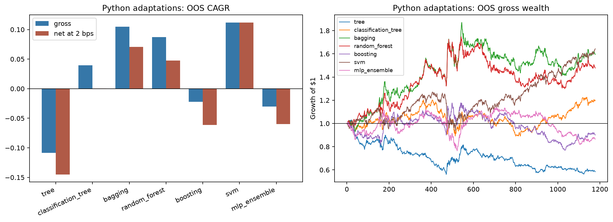
자세한 설명과 수치 근거는 이 그림의 앞뒤 본문에 있다.왼쪽에서 비용 전후 막대의 간격을 보면 회전율의 영향을 확인할 수 있다. SVM은 테스트일의 99.7%에서 매수해 거의 거래하지 않았기 때문에 비용 영향이 작고, 분류 트리는 비용 후 CAGR이 거의 0이 된다. 오른쪽은 같은 모델의 실제 테스트 총수익 곡선이다.
 자세한 설명과 수치 근거는 이 그림의 앞뒤 본문에 있다.
자세한 설명과 수치 근거는 이 그림의 앞뒤 본문에 있다.
신경망의 시드별 CAGR은 0선을 오가고, 세 SVM 커널의 평균 검증 정확도 차이는 1%포인트 미만이다. 가장 높은 결과 하나보다 반복 실행의 분포와 후보 간 차이를 함께 봐야 한다.
보충 B. 우리 문제에 옮길 때의 판단 기준
- 이 절의 기준은 교재의 주장이 아니라 이 리포트가 제안하는 운영 관점의 확장 이다.
- 기법을 고르기 전에 데이터의 행과 열, 검증 설계, 비용 감도를 먼저 확인한다.
- 표본 외 성적 하나로 채택을 결정하지 않는다 — 그 표본 외를 몇 번 들여다봤는지가 더 중요하다.
이 장의 실험들은 모두 SPY 한 종목, 한 번의 고정 분할에 대한 백테스트다. 모델 우열의 보편적 증거나 현재 시장에 대한 추천이 아니다. 특히 테스트 결과를 보고 시드·잎 크기·커널·비용을 다시 고르면 그 테스트도 학습자료가 되므로 새 표본 외 기간이 필요해진다.
| 질문 | 적합 신호 | 비적합 신호 | 확인 방법 |
|---|---|---|---|
| 데이터의 행과 열이 충분한가? | 수만 행 이상, 예측변수 수십 개 이상 | 이 장의 SPY 처럼 약 1,000행 × 4열 | NaN 을 제외한 실효 행 수를 센다 |
| 검증 설계가 시간을 존중하는가? | 과거 → 미래 순서를 지키는 분할 | 무작위 K겹으로 미래 행이 과거 모델 선택에 섞임 | 모든 학습 구간의 마지막 날짜가 검증 첫 날짜보다 앞서는지 자동 검사 |
| 비용을 견디는가? | 회전율이 낮아 비용 전후 차이가 작다 | 비용 후 성과가 0 근처로 소멸한다 | 편도 비용을 넣은 값과 넣지 않은 값을 함께 기록한다 |
| 표본 외를 몇 번 봤는가? | 모델 선택이 모두 학습 구간 안에서 끝났다 | 테스트 성적을 보고 설정을 되돌아가 바꿨다 | 선택 이력을 남기고, 되돌아갔다면 새 기간을 확보한다 |
| 단순한 대안을 이겼는가? | 단계적 회귀 같은 기준선보다 명확히 낫다 | 복잡한 모델이 기준선과 비슷하거나 못하다 | 가장 단순한 기법을 항상 함께 돌려 비교한다 |
이 장의 결과를 실무 판단으로 옮기면 이렇다. 단순한 기준선을 먼저 만들고, 모든 설정 선택은 시간순 검증 안에서 끝내며, 마지막 테스트셋은 한 번만 사용한다. 데이터를 늘릴 때는 관측 가능 시점과 종목 편입 이력을 함께 보존하고, 거래비용을 적용한 결과까지 확인한다.
① 우리 업무에서 예측변수의 열을 늘릴 수 있는 가장 값싼 방법은 무엇인가? ② 무작위 K겹 교차 검증을 시간순 분할로 바꾸면 우리 기존 백테스트 결과 중 어떤 것이 달라질까? ③ 표본 외 구간을 몇 번 들여다봤는지 우리는 실제로 기록하고 있는가?
연습문제 10개 — 재학습·임계값·앙상블·상태 추론
원문의 문항을 짧은 실행 과제로 재구성했다. 세부 데이터 경로와 원문 표현은 참가자용 교재를 함께 본다.
단계적 회귀로 SPY 익일 수익률을 예측할 때 매일 최신 데이터를 학습셋에 더해 재학습한다. 2009-09-16~2014-06-02 구간에서 CAGR 10.6% 와 샤프 0.7 을 넘기는가?
예측 수익률의 크기가 임계값을 넘을 때만 신호를 내도록 바꾼다. 표본 내 최적 임계값이 표본 외에서도 더 나은 성적을 내는가?
매매 금액을 예측 수익률 크기에 비례시킨다. 학습셋 평균 절대 시장가치가 1달러가 되도록 비례상수를 맞추고 레버리지 수익률로 CAGR 을 계산한다.
펀더멘털 데이터셋의 반응을 상승·하락 분기로 이산화하고 무작위 부분공간과 분류 트리 랜덤 포레스트를 적용한다. 이산 반응에서 "예측 반응의 평균"은 무엇을 뜻하는가?
여러 커널 함수와 커널 스케일을 시도해 기본 SVM 을 개선한다. 어떤 설정이 가장 좋은가?
HMM 순방향 필터를 재귀식으로 구현하고, 직전 상태 확률과 새 관측 하나만 사용한 결과가 전체 이력을 다시 계산한 결과와 일치하는지 확인한다.
예측에 앞서 매 시점마다 SPY 의 HMM 매개변수를 다시 추정한다. 표본 외 CAGR 이 개선되는가?
SPY 의 HMM 모델로 오늘이 강세장인지 약세장인지 판단한다.
이 장에서 가장 마음에 드는 기법을 고르고, SPY 와 SPX 구성 종목 문제의 예측변수로 쓸 기술적 지표 데이터를 찾을 수 있는 한 많이 모은다.
SPY 분류 트리 모델에 랜덤 포레스트를 적용해 회귀 트리 모델의 해당 결과보다 나아지는지 확인한다.
핵심 용어
| 용어 | 이 장에서의 의미 |
|---|---|
| 과적합 (overfitting) | 과거 데이터에만 잘 맞고 표본 외에서는 어긋나는 현상. 이 장 전체의 적이다. |
| 특성 선택 (feature selection) | 많은 후보 변수 중 예측에 정말 중요한 변수만 골라내는 일. |
| 단계적 회귀 (stepwise regression) | 현재 모형에서 변수를 하나씩 추가하거나 제거하며 개선 여부를 검사하는 탐욕적 변수 선택 절차. |
| 회귀 트리 (regression tree) | 부등식으로 데이터를 계층적으로 쪼개 연속 반응을 예측하는 모델. 분할 기준은 자식 노드 분산. |
| 분류 트리 (classification tree) | 상승·하락 같은 이산 클래스를 예측하는 트리. 분할 기준은 GDI. |
| 지니 다양성 지수 (GDI) | 한 노드의 불순도. 한 클래스만 있으면 0, 반반이면 최대 0.5. |
| 교차 검증 (cross validation) | 학습 구간 안에서 모델 설정을 비교하는 절차. 시계열에서는 과거로 학습하고 뒤 구간에서 검증한다. |
| 배깅 (bagging) | 복원추출로 데이터를 복제해 여러 모델을 학습시키고 예측을 평균한다. 편향은 두고 분산을 낮춘다. |
| 배깅 외 관측치 (out-of-bag) | 어떤 백에 뽑히지 않은 관측치. 그 백의 표본 외 검사 자료가 된다. |
| 무작위 부분공간 (random subspace) | 모델마다 사용할 예측변수 일부를 무작위로 골라 다양성을 만드는 앙상블 방법. |
| 랜덤 포레스트 (random forest) | 복원추출한 데이터와 무작위로 제한한 예측변수를 함께 사용하는 트리 앙상블. |
| 부스팅 (boosting) | 앞 모델의 잔차에 다음 모델을 집중시켜 순차적으로 개선한다. 일반화 효과는 데이터와 설정에 따라 달라진다. |
| 앙상블 · 약한 학습기 | 홀로 약한 학습기를 많이 모아 하나의 강한 학습기를 만드는 방법과 그 구성원. |
| 서포트 벡터 머신 (SVM) | 두 무리를 넓은 마진으로 나누는 분류 기법. 커널에 따라 선형 또는 비선형 경계를 만든다. |
| 커널 함수 (Kernel function) | 예측변수를 비선형 변환해 곡면으로 데이터를 가르게 하는 함수. 유연성과 과적합 여지를 함께 늘린다. |
| 은닉 마르코프 모델 (HMM) | 관측되지 않는 상태로 관측값을 설명하는 모델. 이 장에서는 강세·약세 두 상태와 상승·하락 두 방출. |
| 전이 · 방출 행렬 | 상태 간 이동 확률과 각 상태가 관측값을 낼 확률을 담은 두 표. 각 행의 합은 1이다. |
| EM 알고리즘 | 숨은 상태의 확률을 추정하는 E 단계와 그 확률로 전이·방출 행렬을 갱신하는 M 단계를 반복한다. |
| 신경망 · 활성함수 | 입력의 가중합에 시그모이드나 tanh 같은 비선형 변환을 적용하고 여러 층으로 연결한 모델. |
| 조기 종료 (early stopping) | 검증셋 오차가 늘기 시작하면 학습을 즉시 멈추는 과적합 억제 장치. |
| 딥러닝 (deep learning) | 여러 표현 층을 학습하는 신경망 계열. 필요한 데이터량과 계산량은 문제와 구조에 따라 달라진다. |
| 데이터 정규화 (normalization) | 종목마다 다른 변동성을 맞춰 여러 종목 데이터를 하나로 합칠 수 있게 하는 처리. |
| 생존편향 (survivorship bias) | 현재 살아남은 종목만으로 과거를 평가할 때 생기는 낙관 편향. 날짜별 실제 구성 종목 이력이 필요하다. |
| 데이터 스누핑 편향 (data snooping bias) | 같은 데이터를 반복해 들여다보며 설정을 고르는 과정에서 성적이 부풀려지는 현상. |
참고 자료와 도형 출처
- [1]Ernest P. Chan, Machine Trading (Wiley, 2017), Chapter 4 “Artificial Intelligence Techniques”. 본문의 절·그림·표·연습문제 번호와 인용 수치의 출처. 참가자용 한국어 해설판.
- [2]Breiman, Friedman, Olshen, Stone (1984). 회귀·분류 트리의 분산 최소화 분할 기준의 출처.
- [3]Friedman (1999). 경사 하강 부스팅의 출처.
- [4]Murphy (2012). EM 알고리즘 논의의 출처.
- [5]Dueker (2006) — 연속 방출 HMM. Kun (2015) — 부스팅이 과적합되지 않는다는 이론적 논거. Anonymous (2015) — SVM 벌점 항의 수학적 세부. Allen (2015) — 2006년 신경망 돌파구. Hothorn (2014) — R 패키지 대응.
- [6]Domingos (2012) — 입력 특성 의존성. Rechenthin (2014) — 고빈도 데이터. Kazemian (2014) — 비정형 데이터.
- [7]저자 배포 자료
epchan.com/book3의 Chapter 4 ZIP (SHA-256a556978e…0358). 보충 A의 실행 감사에 사용한 코드 22개와 데이터 2개. - [8]Python 실행 산출물 — 참가자용 교재 저장소의 Chapter 4 실행 보고서와 실행 스크립트.